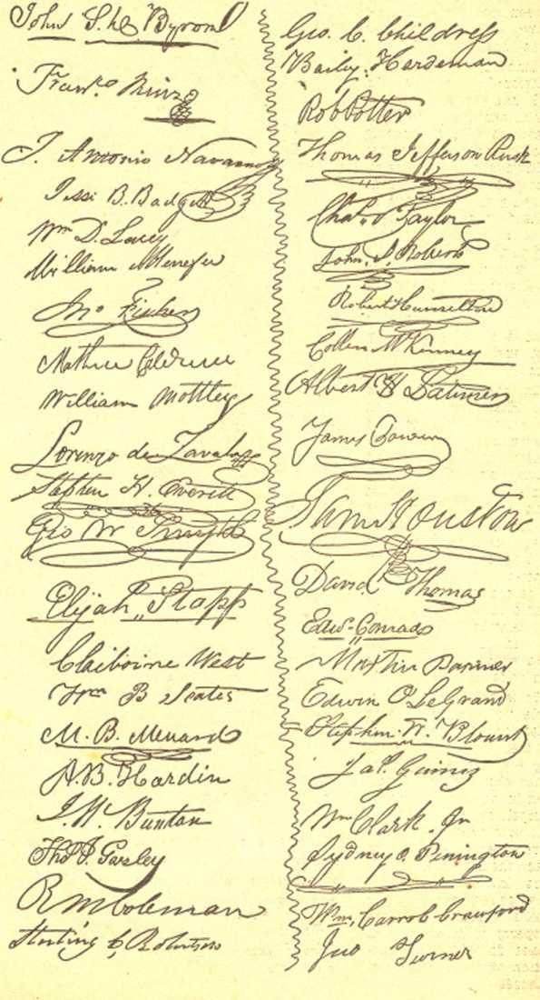
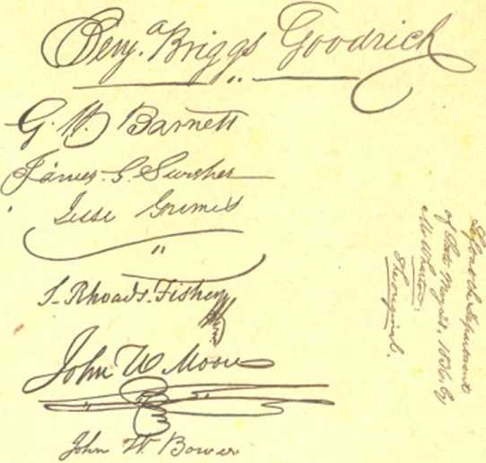

The MESSENGER
18,000 orderly people entering and leaving Madison Square Garden on the occasion of Judge Rutherford's address on "Government and Peace”, Sunday, June 25, 1030
Brazil. Sao Paulo: “Heard message.” Denmark. Copenhagen: “Reception splendid and news enthusing. Mighty men feeling uncomfortable. Hallelujah.”
England. Birmingham: “Jehovah’s message ‘Victory* to His great army of locusts heard perfectly with great thrills, exultation; all thanks to Jehovah.” “Magnificent reception of .Jehovah’s theocratic message; audience thrilled.” Bristol: “Locusts thrilled; greatly rejoice with you in victory song.” “Thrilled by your fearless and
1 bold declaration for the Kingdom; reception perfect.” Gillingham (Kent) : “Heard lecture distinctly Sunday.” Hull: “Excellent reception; attendance 1,200; rejoice; Catholic opposition failed; standing firip for Theocracy.” “Reception grand; eager to use book Saltation in sounding drom of religion.” Leeds : "Two. thousand heard:
I excellent reception of thrilling address.” “Excellent reception of your thrilling address. Convention sends greetings and declares
A Kingdom smile
united determination to march on with you to ^.victory.” Stoke-on-Trent: “Thrilled by vic-tory shout; best yet.” Liverpool: “‘Victory’ reception magnificent; locusts ready to devour all varnish.” “Let all forces come: victory cooperation assured.” “Reception perfect; attendance 2,410; no disturbance; audience thrilled.” Warrington: “Loyal greetings. Broadcast perfect.” Ellesmereport : “Ready for all co-operation; reception thrilling.” Birkenhead: “Locusts will continue to the complete vindication.” . London: “London convention sends greetings fo’New-York convention. With you in sounding religion’s doom and making the old lady howl.” “Grand, stinging, fighting speech; every word perfect. Thousand religionists could not take it; walked out. 7,500 heard entire. Approve war invitation to religionists. Police heavily guard palace; no bombs; no Fascist interference. Three thousand London convention warriors thrilled; engineers satisfied.” “Despite threat, eighteen hundred thrilled with ‘Victory’. Wild with joy for Salvation. Convention set for great locust attack.” “Irish Republican Army threaten London-Belfast circuit. Scotland Yard on watch. Nothing happened. Best overseas reception yet. Engineers greatly satisfied. Keenly anticipate tomorrow.” Manchester: “Excellent reception.
Locusts thrilled and unanimously send . keenest appreciation of wonderful surprise Salvation and pray all power tomorrow’s speech.” “Splendid reception ; 2,300 entirely with you; no opposition.” Newcastle-on-Tyne: “Fighting locusts heard ‘Victory’ perfectly; all praise to Jehovah for Salvation." “Reception excellent; 1.600 enthused by opposition’s selfexposure. Praise Jehovah.” Yeovil: “Reception thrilling, clear, strong.”
Hawaii. Honolulu: “Rejoiced hearing ‘Victory’; shouted ‘Aye’; received Salvation." “Perfect reception; thrilling, inspiring message; pledge ourselves for theocratic Kingdom.”
India. Bombay: “Fair reception.” Ireland. Belfast: “Reception splendid; entire audience with you. Jehovah continue with you.” “Publishers enthusiastic; rejoice with you in ‘Victory*.”
Latvia. Riga: “Saturday, Sunday, reception perfect.”
Lithuania. Kaunas: “Heard both; enthused.”
New South Wales. Newcastle: “Family of locusts radio 2HD Newcastle received speech very clearly. Assure you of our one-hundredpercent support.” Strathfield: “Upwards two thousand heard giant-slaying speech; repeated applause high points; throng joined in tumultuous ‘Aye’ as it resounded through the earth.
(Continued on page 18)
Published by Watchtower Bible and Tract Society, Inc., 117 Adams St., Brooklyn, N. Y.
Printed in the United States of America, August. 1939. 5c.
JEHOVAH’S KINGDOM is functioning in the earth today. The King Christ Jesus is present, ruling in the midst of His enemies. He is using the Watchtower Bible and Tract Society, a company of Christians whose lives are devoted to proclaiming the honor of God’s name, and who are God's witnesses— Jehovah’s witnesses.
The conventions of Jehovah’s witnesses are not like any others in the world, either in purpose or in scope. Their purpose is to do God’s will, and His will at this time is that the Day of Vengeance shall be declared throughout the earth, the proclamation that Armageddon is at the doors.
Arrival of Judge Rutherford at the auditorium
Every convention of Jehovah’s witnesses has this in view: that the earth is about to be cleansed by removing from it every disturbing element, root and branch, and that following its cleansing there will be on this earth the reign of justice, peace, truth and love for which Jesus told His followers to pray.
Theocracy, God’s government, is in operation in the earth and is most noticeable at these conventions of Jehovah’s witnesses. None of the proceedings are secret. All who love God are welcome at the point at which the speaking is done, and at all the scores or hundreds of places over the planet where the voice of the speaker is heard.
Those who read this Report will have the evidence presented to them of vast assemblies meeting in such far-separated points as London, New York, Chicago and Los Angeles' to listen to the truths of God’s Word and of His kingdom, as they went forth by radio’beam, and by wire connections to all the earth. They will take note that in lands where English is not spoken there was provision that swift reporters translated simultaneously or took in shorthand and reproduced the lectures for the benefit of the listeners.
Opposition to God’s Kingdom Is it possible that any human creatures could be fallen so low as to oppose the establishment in the earth of the perfect conditions which are foretold by all the holy prophets since the world began? It seems incredible, does it not? But docs it not also seem incredible that the Son of God was crucified as a malefactor in Jerusalem in A.D. 33, and that it was done at the instance of those who claimed to be God’s own special representatives?
It will be seen in this Report that Catholic Action today is as active against Jehovah’s witnesses as the Jewish hierarchy of Jesus’ day was against Him. To be sure, it is not only in this day that Catholic Action has been opposed to better conditions for humanity. It has always heen so opposed.
It is an established policy of the Roman Catholic Church to claim ultra-patriotism in every land in which it is established. In America today this takes the form, not of regard for American institutions, but of ostentatious flagwaving, to cover a hatred of liberty and free speech so deep that it would gladly put to death those who cherish the heritage passed down to them by their forefathers, if only it bad the power. Admissions to that effect have heen made.
The spur of necessity has compelled Spain, Germany in Luther’s day, France in the Revolution, England, Russia. Mexico and many other countries to unhorse the clericals and give the people a chance to breathe. What of America ?
The whole world knows that the Roman Catholic Hierarchy hacked and still backs Hitler, Mussolini and Franco in their destruction of the liberties of many people, and that these men stand for exactly the opposite of American ideas and ideals. Who is so foolish as to believe that the men who tire their arms waving the flags of these dictators, and tire their mouths shouting “Heil Hitler”, “Viva il Duce” or “Viva Franco”, are sincere when they pretend to accord honor to the American* flag? The Hierarchy makes much of Jehovah’s witnesses’ refusal to salute any flag of any nation, as ascribing salvation to a man-made object, but one glance into the history of America will prove that flaunting hand-service of the American flag is merely a bit of hypocritical musclewasting.
The American flag was intended by the forefathers of this land to he a symbol of liberty. It was the symbol of a nation that had emancipated itself from oppression by all foreign powers, especially that of the Vatican. Of the 56 signers of the Declaration of Independence only one was a Catholic, and he did not favor Americans’ yielding to the Vatican.
What of that great liberty - loving empire called the “Lone Star State”? Were the Catholic Hierarchy the leaders in this break from Mexico? Read the Texas Declaration of Independence, which appears in full on pages 25-29 of this issue. Note the words that have been underlined.
Also, take note of the fact that at this moment the Coughlinites. definitely committed to the overthrow of American institutions, are advised by their leaders to carry flags of the Stars and Stripes when doing their hoodlum work of breaking up lawful assemblies. Such men are not patriots; they are the worst of traitors.
Of what avail is all the talk of the Press about patriotism when it is notorious that it is under the control of the Roman Catholic Hierarchy? It merely serves as a smoke screen to cover up the Hierarchy’s treacherous course.
The Catholic Press itself is still more reprehensible. It claims to be ultra-patriotic, yet it knows that Judge Rutherford, an innocent man, was denied bail by Judge Man ton, and was deprived of his liberty nine months because of that fact, while Manton himself, tenth in line of American judiciary, is one of the mast reprehensible criminals that ever lived. And it knows that it never hesitates to refer to Judge Rutherford as an “ex-convict”, well knowing that he never was a convict, while it is entirely silent about the man who sold justice as a farmer would sell potatoes or pigs. Meantime Manton, on bail, lives in luxury in his Long Island palace, and of his crookedness the Catholic Press is silent.
The most important feature of the Worldwide Convention of .Jehovah’s witnesses centering in New York, June 23-25, 1939, were the addresses of Judge Rutherford on “Victory”, June 24, and on “Government and Peace”, June 25, with the release of the book Salvation, a guide to truth and life for the Jonadabs who would escape Armageddon. This book can now be obtained on a contribution of 25 cents.
Both of Judge Rutherford’s addresses were broadcast over the world by radio stations. Neither of these addresses is available for The Messenger, though obtainable otherwise. A concluding announcement respecting “Government and Peace” was: “You will desire to study the points made in the speech. For that purpose it will be printed, and you may have a copy upon request made to Watchtower, Brooklyn.”
The address on “Victory” will be obtainable in due time, and announcement to that effect will be made in due course by the Watchtower Bible and Tract Society. However, it is possible to “purloin” for The Messenger one little taste out of this address, which will surely reach some before they have opportunity to read the whole discourse. Surely this is enough to stir the interest of any person who loves Goh’s Word :
Delivering “Government and Peace"
Jehovah is now using his witnesses to carry on his strange work in the earth, and he not only likens them unto locusts, but he calls them “my great army". (Joel 2:25) That army God now sends out against the religious element of '‘Christendom'’, and their faithful service is a torment, to religious leaders. Locusts do not kill human creatures, but they do destroy the food supply. Jehovah’s witnesses do not prosecute a war against men with carnal weapons. but they do destroy the provender which religionists have dished up for the people and which Is poisonous; therefore the people of good will flee from religion, lie-cause it is a deadly thing. Mark now God’s description in symbol of his witnesses, his "groat army", which he sends among ‘’Christendom". He describes his witnesses as a "holy nation”, because wholly devoted to Gcal’s kingdom. (1 Peter 2:9) As it is written, locusts have no earthly king, yet they go forth by bands. (Proverbs 30: 27) Likewise Jehovah's witnesses have no earthly king or leader. Christ Jesus is their King and Leader. Of them God’s prophet says: "Whose teeth are the teeth of a lioli, and . . . [jawj teeth of a great lion." (Joel 1:6) Their Leader. Christ Jesus, is the groat "Lion of the tribe of Juda”, and they follow his lead and utter his message, which bites and stings opponents. Locusts enter into the houses and even eat the varnish off the furniture. Jehovah's witnesses enter into the houses of the people and take away the veneer of religion that has been smeared over the people to keep them in darkness Their Leader. Christ Jesus, the great Lion, reduces religion to shreds, completely chewing it up.
While, therefore, neither of the above addresses appears in this issue of The Messenger, the concluding’words of the lecture “Government and Peace” are quoted, so that all may have a taste of the thrill that went round the world when 18,000 persons at Madison Square Garden shouted “Aye”. One of the shouters was a Catholic woman in the balcony who had come to be one of the disturbers of the meeting. At first she had booed when the others booed. Warned to desist, she remained quiet till , the .close, when she apologized to the usher and remarked that she had been helped. As the concluding words of that lecture she heard the following Warning, which is enough to make anv person stop and think of his relation to God.
To the Vatican. Hierarchy and religious supporters I address these words: You’ acknowledge yourselves as part of the dictator governments which cruelly persecute Jews and Christians; hence you oppose The Theocracy.
For fifteen centuries you have blasphemed Jehovah God’s name, disturbed the peace of the world, fomented and prosecuted wars of conquest, caused the untimely death of countless innocents, clothed their chief killer in robes of glory and held him up io the world as an example of virtue; Spain being among your more recent scenes of violence. Therefore G<xi declares to you : 'Upon your skirts is found the blood of the souls of the poor Innocents.’—Jeremiah 2:34.
By putting the people in fear you have kept many In ignorance, and now you Incite the ignorant to commit for you assaults upon Christians. You have destroyed freedom of speech and of worship, and now you would take away all liberties of the people. Heretofore you have crushed every movement for truth and righteousness; but Ik* Informed that, you cannot succeed In your opposition to The Theocracy. Jehovah's witnesses do not fear you. because God is with us. (Jeremiah 1: 19) Your end has come. The divine judgment is written against you. declaring your destruction, and yon are going to die, and, further, that the memory of you shall perish for ever.— Psalm 145:20; Proverbs 10: 7.
To AU. ORDER-LOVING CATHOLICS, JEWS AND PROTESTANTS I address these words of hope: Heretofore you have followed the lead of unrighteous men. permitting them to think for you. if you would escape disaster and find salvation to life you must forsake religion and choose and serve Jehovah God and Christ his King. All who do not stand for God and His kingdom by Christ remain in opposition and will be destroyed. Those of good will toward God will choose His government under Christ. Those now hearing and who desire that righteous government and peace, say Aye.
A remarkable thing about the World-wide Convention, centering in New York, is the awakening of the Jews to the fact that God’s Kingdom is their only hope. In an early issue of Consolation magazine will be published a letter from a prominent Jewish oculist appealing to Judge Rutherford to strike a blow for liberty at the Madison Square Garden which would help these people now in such dire distress over the world as a result of the persecutions with which Europe is now aflame. That letter was read at the convention, and created a stir. And since the convention the friendliness of many of the Jewish people in New York city is noteworthy. The following are certain selected paragraphs from Der Tog (The Day), leading Yiddish newspaper of the world, published in New York July 2:
There were numerous cases in Danzig where members of the same organization (Jehovah’s witnesses] defended Jews against assaults by Nazis, or when those upright women of the common people intentionally patronized Jewish stores just when Hitlerites picketed those Jewish shops. Only a half year ago when like an epidemic all kinds of food stores began to post the well-known signs "Juden unerwiinscht” (Jews not wanted), the same German women have regarded it its a sacred duty to provide their Jewish neighbors or mere acquaintances with food or milk without asking any reward for it.
To us, Jews, the members of that organization are true "fellow sufferers”, brethren in distress. When one meets such a man or woman they are the ones who comfort the Jews. They quote various Bible texts and endeavor to prove to the Jews that a time of happiness is impending. In a time of moral depression and total absence of rights, of hopelessness and desperation, when one does not know what the morrow will bring, the active work of the widespread religious society of the "International Bible Students Association" and "Jehovah’s Witnesses" Is evidence that we still have a very great number of friends amongst the German common people who literally weep over the great disaster which has befallen the German people.
Therefore we ought also here, upon American soil, create a closer contact with these very important non-Jowish groups, whose members are our sincere friends. Let us manifest toward them the well deserved sympathy; and when they organize mass meetings to fight against Nazism and anti-Semitism. the American Jews ought to show them open friendship in order to fight, jointly with them, the common foe.
The music at the convention was excellent. Artists from all over the country assisted the regular Watchtower orchestra of WBBR. One of the sweetest sights at the Sunday morning session in the Madison Square Garden was to see a little girl, not over 11 years of age, Wilmazee Whitener, of Kansas, two braids hanging down her back, modestly but skillfully playing a piano-accordion, and very evidently making sweet music two ways, one with her instrument, and the other with her heart to the Lord. God grant that she may pass unscathed through Armageddon.
IN THE early part of 1918 the Watchtower Bible & Tract Society published three issues of Kingdom News and circulated them widely. The circulation of these papers exposed the duplicity of the clergy so completely that one intelligent person said of Judge Rutherford, ‘‘That is the last thing he will ever write.” What he meant was that the hypocrites would be so infuriated that they would cause him to be put to death. They did indeed attempt it, but failed, and since then almost three hundred million copies of his books have been placed in the hands of the people.
It is extremely interesting that the misdeeds of the clergy and their followers led to the publication of Kingdom News Numbers 1,2 and 3; and it is also extremely interesting, and significant too, that, after a lapse of 21 years, conditions in connection with Judge Rutherford’s address at Madison Square Garden made it manifestly God’s will to publish Kingdom, News No. 4, which is shown on the next four pages in slightly reduced facsimile.
In Kingdom News No. 4 appears the best statement of what took place at Madison Square Garden. July 25, 1939. You will find it in Judge Rutherford’s “Open Letter to Mayor La Guardia”, and, just so that the'mayor would not be left in any doubt that the matters therein brought io his notice deserve his attention. Jehovah’s witnesses placed a million copies in the hands of the citizens of Greater New York between July 15 and the 25th. Not another organization on earth could do it.
INFORMATION for all persons of good will to-ward Almighty Ood. RELIGION Is a snare and a racket. GOD'S TRUTH shields, and strengthens the upright.
DEVOTED to the prtn-clpl«* of Justice. truth, equity and kindness a* •xempKSed In the «ei» and sayings of The Creator of ths Universe and of His King Christ J«su«.
... the government shall be upon his shoulder; and his name shall be called Wonderful Counsellor. ... of the Increase of his government and peace there shall be no end . . . The zeal of JEHOVAH of hosts will perform this.—Isaiah 9:G, 7.
Vol. 1 New York City - July 1939 No. 4
On Sunday June 25, at Madison Square Garden, New York, a great multitude of persons of good will met to hear the principal address of a three-day convention. The Garden assembly was linked by wire and wireless to dozens of similar assemblies throughout North America and other continents. At the same time also scores of stations broadcast that address. For a few minutes during that one-hour meeting some misguided fanatics, directed by the Hierarchy of the Roman Catholic Church, tried to drown out the speaker’s voice and break up the assembly by starting a chorus of boos, howls and shouts of “Viva Franco” and “Heil Hitler”, in the top balcony. That short but unlawful disturbance the press of New York and the entire nation snatched up as “news fit to print”, falsely characterizing it as a “riot” that “broke up the meeting” “in darkness” in a “bloody free-for-all fight”. All- present at the Garden and the thousands or millions who heard the whole speech on the radio know what occurred. Falsehoods printed as “news” are unanswerably contradicted by THE FACTS searched out by Consolation magazine and its attorneys. Sincere people who love honesty know that they cannot rely upon the associated press and newspaper publishers who prefer to print what helps to sell papers. In the public interest, therefore. Kingdom News presents THE FACTS as found and sent to the Mayor of New York, who also was misled by the false press reports. More facts, in another open letter sent to the Roman Catholic archbishop of New York by a member of the New York Bar, are also published here, together with other information for the careful consideration of every order-loving person in this world’s greatest city.
(Dated Brooklyn, N. Y., July U, 1939]
Honored Sir:
This letter is not to ask a favor. The purpose is to place before you some pertinent facts and to respectfully request a statement of your position regarding the same. As the chief public servant of the people of Greater New York your attitude not only affects the people of this city but its influence reaches throughout the land.
FACTS: June 23-25 was the occasion of a peaceable assembly of thousands of Christian people in convention within the City of New York for the study of Gods Word, the Bible. On the 25th Madison Square Garden was the key assembly for many other like public assemblies of Christians in America, Canada, Great Britain and Australia, all of which assemblies were tied together by wire and wireless equipment, thus making it one tremendous lawful Christian assembly. The people were there at that time to listen to *an address on GOVERNMENT AND PEACE delivered from 4 to 5 o’clock P.M. In addition thereto seventy-five radio stations broadcast the speech. More than eighteen thousand persons were orderly and lawfully assembled at the Garden to worship Almighty God.
The Catholic clergyman Charles E. Coughlin had his followers picketing a certain radio station in the city. Those and other fanatical Catholics had repeatedly on previous occasions threatened to break
up the Madison Square Garden meeting, and other meetings tied together with it. Due notice of this threatened unlawful action was given to the police officials of the City of New York, as well as other cities. About 4 P.M. three Catholic priests took seats in the gallery of the Garden and about the same time 200 or more Coughlin Catholic pickets, led by an agitator well known to the police, marched into the same gallery immediately back of the speaker’s platform. They came there for the expressed purpose of breaking up that meeting, and this is shown by an abundance of evidence. About twenty minutes after the speech began, and at a given signal from some one of them in the gallery, that company of fanatical persons began a loud disturbance of yelling, shouting and cursing. Ushers called upon the police to quell the disturbance, to which de-ma nd the police officer in charge replied: “That is your job.” This statement was made in the face of the facts that the policemen at the time were hearing and seeing the unlawful action of the disturbers.
Ushers lawfully in charge of the meeting hurriedly rushed to the point of disturbance and demanded of the disturbers that they cease interruption or else leave the meeting place. Instead of obeying, the Catholic fanatical disturbers violently assaulted a number of the ushers, and some of the ushers in turn defended themselves. The police did not even attempt to arrest anyone for unlawfully disturbing that lawful assembly, but they did arrest several of the ushers who were acting lawfully in the performance of their duty. Two weeks have passed and no one of the dis-turbers has been arrested for an attempt to break up a lawful assembly. Law-abiding citizens have been arrested for doing what the police are sworn to do but which they failed to do.
PRESS: The public press and a few radio stations announced that the meeting at Madison Square Garden was broken up by rioters and that the riot spread to every part of the Garden and that ushers had been arrested.
The meeting was not broken up. The entire proceedings were simultaneously recorded by electrical means and that transcription clearly proves the untruthful statements made by the public press and certain radio stations. For one hour every word of the speaker was transmitted to the English-speaking world above mentioned, was clearly heard, and was transmitted by wire to the recording studio, all of which is unquestionably
The MESSENGER proven by the recorded speech and by the many cablegrams received and publicly read that same night at the Madison Square Garden.
YOUR STATEMENT: On June 29th the New York Herald Tribune quotes you, the Mayor, as follows: “I call your attention, gentlemen, to an incident of a few days ago, when another group, seemingly and ostensibly pretended to be for the good things of life, openly attacked people of your faith.” The paper then adds: “The remark was taken-to be a reference to the •Government and Peace’ meeting of the International Bible Students Association at Madison Square Garden on Sunday, at which a riot started after charges by Joseph F. Rutherford that the Roman Catholic Church backed Chancellor Hitler in Germany.”
In complete contradiction of this statement attributed to you, that “Another group openly attacked the people of your [Catholic] faith”, I submit the complete text of the speech, also the transcription record thereof, which will be furnished at your request. At the point of the speech where the disturbance began nothing had been said against the Catholic faith and no reference to Catholics, except a quotation from The Catholic Encyclopedia.
The name of Hitler was not mentioned once. There was no occasion at that time to mention his name. In view of these facts the public is misled by the press and by quotations of high officials, who were not present, all of which the thousands of orderly people who were present well know are contrary to the facts.
QUESTIONS: In behalf of a great number of honest, sincere Catholics and non-Catholics of the City of New York, as well as elsewhere, I respectfully propound to you. Mr. Mayor, the following questions which the people have a right to demand of their Mayor shall be answered:
(1) Section 1470 of ttve Penal Law of New York says: “A person who, without authority of law wilfully disturbs any assembly or meeting, not unlawful in its character, is guilty of a misdemeanor?’ Are you in favor of enforcing that law’
(2) The assembly at Madison Square Garden was a lawful one. A crowd of gangsters, openly claiming to be Catholic Coughlinitcs, willfully disturbed that meeting, having come there deliberately for that purpose. Police officers there present saw such flagrant violation of the law. Why did not the police arrest and prosecute those willful law-breakers? Do you approve of the action of the police in refusing to arrest the rioters and at the same time arresting ushers who were there by right and acting in the performance of their lawful duty?
Your copy free
The speech "Government and Peace”, given on June 25 at Madison Square Garden by Judge Rutherford. It shows what JEHOVAH, the Protector of all upright persons, purposes to do very soon against organized religion. His enemy and the destructive foe of all honest people. It shows how JEHOVAH, the Almighty God of the Hebrews, will govern the entire world forever through His King, Christ Jesus, the Messiah, who is the Prince of Peace, when every religions Institution and system is swept from the earth by H18 irresistible power. Write for your copy of the speech to WATCHTOWER
117 Adama St, Brooklyn. N. Y.
(3) Is the statement published in the aforementioned newspaper, to wit: “Another group (meaning those Christians lawfully assembled at the Garden for worship of Almighty God J openly attacked the people of your (Catholio) faith,” fully approved by you us Mayor or not, and if yes. upon what do you base that statement?
(4) AS Mayor do you favor and approve the action of the Catholic Coughlinitcs in willfully attempting to break up a peaceable and lawful assembly even though those disturbers did not agree with the statements made by the speaker?
(5) You have publicly denounced Hitler on many occasions, and properly so. I did not mention Hitler. But even if I had, was that any excuse for Catholic Coughlinitcs to attempt to break up a lawful assembly?
(6) There is a vast difference between the common people of the Catholic faith, who honestly and sincerely follow that faith, and those who compose “The Catholic Hierarchy of Authority”. Do you favor the Hierarchy, which is desperately attempting to make America Fascist, or do you favor and support the common people of the Catholic and all other faiths who desire to honestly and peaceably assemble, and who desire a government where men may worship God according to the Constitutional guarantee?
(7) In the light of more than fifteen centuries of history, showing that the Hierarchy has constantly persecuted Jews, do you now think for one moment that the Hierarchy of Authority is honestly and sincerely in favor of permitting Jews to live peaceably in America like other people, as the press has stated?
(8) The "Catholic Action" operated by the Hierarchy of Authority has repeatedly attempted to break up lawful assemblies of Christian people in America. The same Hierarchy and its agents tried to do the same thing at our convention on June 25th at London and other British cities, but Scotland Yard prevented the same because they did their duty. Do you approve of such "Catholic Action" or do you favor freedom of speech and freedom of worship in America by and for
BROADCAST: Tum In WBBR (1X0 ke.) Sunday. 4 to B PM. July 23. 30. and Aupuet 6, for broadcast of RCCORDKO SPCKCH "Govern. ment and Pe»co“, which prove* the pre** did not publish tho truth.
Catholics, Protestants, Jews and all others alike?
(9) You cannot close your eyes to the fact that Fascism or Nazism is rapidly spreading throughout America, and the further fact that “Catholic Action" is not only sympathetic but openly supporting that Totalitarian movement. As Mayor of this city which side of that question do you take?
(10) Refusal to salute flags, hail and bow down to men is seized upon as an excuse or justification to punish Christians. That fanaticism had its birth in Nazi Germany and is employed by Totalitarian rulers as a method of coercing and regimenting the people. That religious fanaticism has been brought into America recently, although Americans for 150 years have respected the flag and obeyed the law for which it stands without being compelled to worship it. Christians do not salute the flag of any country nor hail nor bow down to any man, for the sole reason that Almighty God has commanded that they shall not do so and live. They do obey God rather than men because God's law is supreme, and they arc also diligent to obey every law of the land that is not in contravention of God’s law. Shall Christians be compelled to violate God's law in order to please men? is it better to obey tho law of which, the flag is a symbol, and decline to worship the flag, or is it better to indulge- in the ceremony of saluting the flag and then straightway with impunity and approval of officials, willfully violate the law of the land?
Jehovah’s witnesses do not ask favors of you as mayor, but they do demand that their Constitutional rights be respected. Jehovah’s witnesses are not asking for a defense, because they' need none. They trust in Ged and in Christ, who defend them. Jehovah’s witnesses do have the right, however, to. demand that public officials respect and impartially administer tho law of the land by seeing to it that the peoples of all faiths and all. classes have the right to exercise without hindrance the freedom of assembly, freedom of speech, and freedom of worship of God when such freedom does not endanger the public welfare.
Mr. Mayor, ds official representative of millions of people in this great city, you owe to them and to the public generally throughout the earth a plain statement of what exactly is your stand and what is your answer to the foregoing questions.
Very respectfully submitted,
President
Watch Tower Biber & Tract Society
On July 7, 1939, the following letter was sent to the recently exalted head of the Catholic Hierarchy’s province of New York, by Joseph Wheless, Attorney and Counselor at Law, 10 East 40th St., New York.
July 7. 1039 Most Reverend Francis J. Spellman, Archbishop of New York, Madison Avenue & 50th Street, New York City.
Your Excellency:
Having but recently come Into this City to administer your high office you may be as yet unfamiliar with certain matters of public knowledge passing here not only to the seeming disrepute of your Church and its loyal membership, but which. I atu quite sure, greatly irk the peaceable and law-abiding citizenship of our City, regardless of Faith or want of It. An especially grievous instance lias just passed under my personal view which 1 courteously ask to can to your ofllcial notice for, peradventure, such corrective action as you may deem appropriate.
What I say 13 from my personal knowledge supported by sworn testimony of Court record: f write you upon my personal motion and responsibility In a sense of quasi public duty. Professionally, I up-pear us trial defense attorney In a scries of criminal actions Initiated by several of the aggressors In these scandalous attacks upon public decency and personal liberty, things of which your Church avows Itself the constant champion.
On Sunday afternoon, June 25 last, a vast public meeting of some 20,(00 persons wits held In Madison Square Garden under the auspices of the Watchtower Bible and Tract Society, Inc.; its Presi
Hear Records Free
You may now hoar "Oovornmont and P*»c«" at dallvorod by Judge Rutherford at Madlion Square Garden on Juno 25. At tho time of dollvory tho opooch woo oSoctrlciiny recorded. The phonograph record* faithfully reproduce everything that wao said and heard st the Garden. They will bo run for you and your friends. In your own home, entirely without obligation to you. If you have no phonograph even the reproducing machine will bo brought. Just fill In and mall tho coupon at right: dent. Judge Joseph F. Rutherford, was advertised to make, and made, a public address, broadcast to a large part of the world, on the timely subject of "Peace and Government”; his address began at four o’clock and continued for one hour, despite the Incidents I shall recite. An electrical transcription of the entire address was made, and it Is available tn confirmation of my statements.
For some months past a large gong of Roman Catholic and allied patriots have "demonstrated" before Radio Station WMCA In "protest against denial of free siieech" to u Rev. Coughlin. On the Sunday afternoon mentioned, "the entire demonstration line moved over from WMCA to the Garden," some 500 strong, arriving there after the address had been under way for some twenty minutes. They marched down the balcony corridors and ganged Into an unoccupied section of seats behind the speaker's platform: this I saw. A Roman Catholic priest, whom I did not see. sat In the front row. Upon a sudden flash of electric lights, the entire mob broke out Into howls and wild disorder and staged what their witnesses term a "riot" which also I saw, and numerous brawls and fights occurred.
The self-evident purpose of the "Cough-llnitc" Invasion of the Garden was to "break up the meeting” and prevent the exercise of the "right of tree speech" by the speaker; this attempt was premeditated. mullclous and criminal; it resulted
Watchtower, 11? Adams St.. Brooklyn, N. Y. 1 desire to hear Judge Rutherford's speech, "Govarnment and Peace" as originally delivered. Please send your representative with the necessary equipment, this helna entirely without obligation on my part. Time convenient for me and my friend* to hear will bo
.............................. si .......P.M.
<day and date) (hour)
Name ........................................
Street ........................................
City and State .............................. in a number of police arrests, on the demands of the rioters, of ushers making efforts to preserve order, but none of tho rowdies were arrested, as yet Several cases of charges of felonious assault were laid over In Felony Court from July 5 toll ; one CMU for alleged "disorderly conduct” was tried on two days In the 7th District Magistrate’s Court, defended by me, and a judgment of “not guilty" was entered and the defendant usher discharged, on July 3rd.
This case presents such a unique record of perjury on the part of the zealous Catholic complainants that, with the stenographic reports before me. I cite its more signal mendacity to you. One of the plck-cter mob which “moved over from WMCA to the Garden" and who made and swore to the complaint was one. Philip May; his .associate complainant was a young Cathoik- girl, Agnes Walton. Roth of them were "rioting" vociferously. Both swore, with much circumstantial detail and immwi-re contradictions, that the defendant usher, Joseph Roth, after first striking an "unknown woman" with his cane, then punched Agnes with the ferrule end of his cane, then "raised his cane and struck her on the head. Agnes was knocked unconscious from the force of the blow. Some of Agnes' friends then escorted her from the Garden as soon as she had received the blow that way". None of this hnppetwd, Agnes was not touched, as the sequel will show.
A witness for the defendant testified that he overheard May tell Agues to Ue down on the floor as If knocked down, and then make a charge to the police that she had been struck by an usher and knocked unconscious. To "rebut" this damaging testimony, the complainants brought in u new witness who had not heard the previous testimony about Roth's nttuck on Agues; this witness "rebutted” too much. He swore that be had escorted Agni's, her sister and other women to the meeting and sat with them in the section referred to; Agnes had sworn that she had not been in that section; her friend then swore that when the riot broke out. he and his pro-Uffvn started to leave the Garden, he guiding Agi>es and her sister by the arm; that as I hey paxiwM be saw an usher (Russell Kuneu. who was stationed w-crnl sections away from Roth’s station, where the other witnesses swore tbd Incident occurred l strike the "unknown woman" with his cane; that no one struck Aitnos. but that Agnes lay down on the floor at his feet, and was carried out by friend*, and that he hud taken "moving pictures” of the carrying out scene. This rebuttal witness thus rebut tod the entire story of alleged assault on Annes by Roth or by anyone and proved that May. Agnes and tlieir other Catholic witnesses bad little practical regard for “Catholic Truth.” The defendant- was acquitted, and tlte complainants were admonished against making a further complaint for "assault" as a waste of Court (Iroe.
These arc summary details of this outrage against civil rights on the part of some of your Faithful and of their guilty effort to make capital and credit out of their own crime against public order and right of free speech. Their day of reckoning for It Is yet to come.
This latest Catholic outrage against the persons and rights of "Jehovah’s witnesses" (I am not one) is simply the lust one so fur of a long and disgraceful scries of Roman Catholic outrages against these respectable and law-abiding people In lawless attempts to suppress mid destroy them and their legal anti constitutional rights.
Your Excellency must know that hundreds, thousands of their members have been subjected to Insult, urrest. fine nod imprisonment In many cities and towns of this country, in Roman Catholic communities. by Roman Catholic zealots, for no legal offense. If you do not know. I tell you that In over one hundred Instances Roman CatlwiUc attempts have been made (over 30 times .successfully) to force Radio Broadcasting Stations liaving contracts with tills organization, to breach their contracts and deny the right of free speech to its spokesmen; one such attempt was runite by the pious Tablet of Brooklyn, but failed; a succevttul one was made by the hands of your Church In Philadelphia, for which u damage suit IS now pending against your Cardinal Archbishop and Others there. A big bill of particulars of other meddling can be rendered: this suffices to point the moral, that there is too much "Catholic Action" abroad In this land, and that countervailing American Action is becoming Increasingly restless to offset this evil trend.
It does not become me. not having the cure of Catliolic souls, to suggest remedies through your high jurisdiction; I simply cull to your attention these obvious abuses, and hope that, knowing them, the seeming unrestrained zntl of your Faithful In this Metropolitan See against the civil rights of Americans may be reasonably abated by a gesture from you.
With entire good will and wishes for good, l am
Very respectfully yours, [Signed] Joseph Whsum
SALVATION
A book that discloses God's provision for man's protection and life everlasting. Infor. mat-on tor all. Clotnbound. 300 pages. Just off th* press. Your contribution of fifty cents will bring to you the author's edition 1MME-OIATSLV. Or. on request the regular edition will be delivered to you In August or later and you may contribute a quarter to help print more. Address
WATCHTOWER
117 Adam* kt., Brooklyn, N.Y.
City Magistrate Finds Usher “Not Guilty’
The Law of the Most High God provide* that 'at the mouth of two or three witnesses shall the matter be established’. (Deuteronomy IP: 15) The spirit of that law is fulfilled by the testimony which follows City Magistrate Peter Abeles. Seventh District. Borough of Manhattan, listened for two days to the rase of an usher. Joseph Roth, falsely accused of having part in the Madison Square Garden "riot” on June 25. This is the usher mentioned In the letter to tbi- Catholic archbishop, reproduced In this paper. The just judge, Peter Abeles, upon henring the testimony in the cas«e against Roth, said:
“It would seem reasonable that the defendant was an usher. There Is no denial of that. There was need for somebody to keep order. Apparently the police left It to the people that ran the 'show' to keep order there. With »o many thousands of people In a place like that somebody has to keep order, and use the force necessary to preserve order. They may have to
Jesuits and Catholic Moguls Disagree on Methods
Embarrassment, confusion and disunity, say Eugene Pacelli’s Jesuits, result .from unauthorized use of the term “Catholic" by groups of Catholics who actually oppose the general sense and intent of Catholicism in this country. In America (June 24, 1939). their official magazine. Jesuits appeal for restricted use of the term. Bishops ought to control most strictly the use of the name "Catholic", say the Jesuits.
J. Noll, a bishop whose diocese centers at Fort Wayne, Ind., allowed his official newspaper, Our Sunday Visitor (June 25, 1939), to print boldly on its front page: "Rutherford should be refuted. We'd be much wiser to devote our time to answering the arguments. Deprive your enemies of free speech, and your enemies will some day deprive you of your rights. Certainly Rutherford is making capital of Catholic attempts to have him silenced. Fortunately wo seem to have given up our misguided efforts along those lines, but there, is still a bitter after taste from the previous mistakes. We can prove our claims as the supporters of liberty only by helping protect the liberty even of those with whom we disagree.”
Disagreeing, Pacelli's “hot" radio priest, Charles Coughlin of Social Justice and its "purgatory" racket, prefers the new broadcasters' code under which he says “anti-Catholic and anti-religious broadcasts, of the Rutherford type, would be barred". In the priest's broadcast July 9 he is said to have included the falsehood that ‘Jehovah's witnesses arc against everything and everybody’ and that ‘if patriotic Americans would rise up and stand on their hind legs and come out of their holes, Jehovah’s witnesses could be destroyed in one day*.
Coolest suggestion, perhaps, is John Harney's. He, os head of Pacelli's 'Society of Missionary Jesuits’ (also called “Paulist Fathers”) at New York, hold* that ‘heretics may rightly be killed' by Catholics whenever Catholics nrc strong enough.
So also at Philadelphia, Pacelli's eminent aide, Dennis Dougherty, cardinal archbishop, insists stoutly that he and his stooges “will take further and more drasuse reasonable force. No one has a right to be there and create a disturbance That Is how I understand It. The people running the meeting had a right to eject nny who were lawless. So far as the disorderly conduct charge I* concerned I will find Roth not guilty. Now on the matter of assault: I think that on this charge In Special Sessions the defendant Roth, with nil the evidence that has come before me. would get the benefit of the doubt. I think it would be a waste of time of the Court of Special Sessions to present thl* mutter there.” You have had as full and complete bearing here as anybody could have in a case like this. I have no patience with anybody who disturbs any public meeting, whether of Father Coughlin or anybody else. Agnes [Walton) was not hurt. That sticks in wy mind. So I dismiss the complaint against Roth.”
Magistrate Abelee Is hereby publicly commended for bls ability to judge between facts and Action.
tic action if the broadcasting of Judge Rutherford is permitted to continue”.
Likewise Pacelli’s archbishops and bishop* who at Washington direct hi* National Catholic Welfare Conference cause its news bureau to give readers of Catholic-controlled newspaper* throughout the United States the advice of their monsignor P. Wynhoven, of New Orleans, in whose syndicated article they read: ‘First o’f all give Jehovah's witnesses strong argument.* when they call at your doors; and if that proves ineffective, call the police station or the sheriff, not the priest-house.’
Pacclli personally endorse* the campaign now being pushed nation-wide against Jehovah’* witnesses by the Benedictine priest Richard Felix, of Missouri, and his 'Defenders of Catholic Faith’, with aid of the Knight* of ColumbUs, for the sworn purpose that Judge Rutherford. "shall once more, God willing, wear the stripes of a convict”, even though the pope's Knight of St. Gregory, Martin Thomas Manton (who during the World War wrongfully denied them bail and held Judge Rutherford and his companions in the Federal penitentiary for nine months), now vainly tries to save himself the need to don the zebra garb and take up his residence in the Federal penitentiary for “selling justice'1 (not Social Juctict) while serving as the “tenth old man” of the United States judiciary. Catholic press howls continuously about what was done to Rutherford more than twenty year* ago, and remains entirely silent about Catholic nobleman Manton and his great crime. Catholic Hierarchy—consistent—hey?
KINGDOM NEWS
FUBUSrutO BT WATCHTOWER Bible and Tract Society, Inc. 117 Adams Street Brooklyn • New York Singly. 1c. One thousand, |1
NEXT ISSUE win Include replies. If any. from the archbishop and the mayor.
UNEXPECTED praise conies sometimes, and from quarters unexpected. One Irish New York policeman, on reading the sign “Religion is a snare and a racket”, made the remark. “Ye’re domned right; you people have the right slant on it.”
When a Brooklyn witness was assaulted, the patrolman on the beat used his night stick on the assailant and offered to prefer charges against the aggressor.
Information marchers at Honolulu, Hawaii
In New York, in front of Jian hattan Center, a rejiorter for The Messenger said to a policeman, “Row do vou find this bunch?’’ He replied, “They are the easiest collection of people to handle we’ve ever had here. There is no argument with them. They do whatever you ask them to do. You can see that they are a God-fearing lot. Look at their faces. That speaks plainly enough.”
A Theocratic sound-ear
In front of Manhattan Center on another occasion a boy of twelve, with one of his hands gripping one policeman and the other another, was giving them a witness efficiently and alertly, and in the’ presence of their sergeant. Presently he said, “Well, boys, I’ve got to go and get another earful, but 1’11 lie back to see you in about an hour. So long!” As he left, the gray-haired, kindly-faced sergeant and the two officers said in one breath, “If that kid hasn’t got some head on his shoulders!”
Infected by the evidences of brotherly love, all around Manhattan Center, one policeman walked up to his colleague, put his arm around his shoulder, and was heard to say, “Well, brother, how are you today?” The captain of police in this precinct, name unknown, manifested considerable concern over the large number of information marches going out, for fear the marchers would not be properly escorted and protected. lie was informed that he need not worn- about that.
A tile of information marchers was moving northward on Eighth Avenue, New York. A
man, approaching, rushed over to a policeman in the street, saying loudly: '‘What the h---- does this
mean anyway? Everywhere you go you meet ’em!” The policeman was heard to say: “It’s a conspiracy ...” But the information march moved on.
After Judge Rutherford’s speech, one policeman at the Madison
Square Garden was heard to say, “From now on I’m going to tell those priests something!” In Chicago, while advertising the Sunday speech and giving a witness to a woman, one of the publishers heard someone come up behind him. After placing a booklet with the woman, he turned, and found a policeman standing there. “What do you get for those books?” the officer asked. “These books are not sold, but peo-le of good will (and hope you are one) like to contribute a little so that more can be printed and distributed,” he was told. He remarked, “You people have something. 1 am a Catholic, but I’m satisfied the whole thing is a racket. I hope you work all these buildings; for I know a lot of good Catholics living here that think and feel as 1 do. May I have some of that literature?” He took Fascism or Freedom, Face the Facts, and Enemies. “Good luck to you!” he said as he walked away with Iris literature.
Denver ‘police were temporarily embarrassed Friday, June 23, when the chief gangster of the city, “Right Reverend Father” Hugh L. McMenamin, temporarily took charge. Whereas for several days previous information marches had been in progress, on that day the police
Six thousand listening in Alexandra Palace, London
bravely arrested one six-year-old child and seventy-two other persons, some of them before they had time to get out of their automobiles, on the ground that the signs which they bore were likely to frighten horses quietly enjoying their feed bags on the grass-lined streets. What they really meant was that the jackasses were already frightened, so that even their collars were twisted around backwards.
The Denver chief, after a bystander had remarked to him that he had taken to arresting school children (a wheelchair pioneer was in the haul), shouted to the witnesses that if they would take off their signs they could go. Nobody took off any signs. One policeman said he knew the arrests should not have been made. The desk sergeant said it was a good publicity stunt. After two hours the witnesses were released and the next, morning over two hundred marchers thoroughly covered the city without molestation. The chief was probably sleeping off the drinks some- noticed he appeared to have had the day previous.
After McAfenamin took charge of Denver the police revoked a sound-car permit granted eight days previously, on the ground that they had received complaints about its operation, whereas the facts were that the sound-car had not yet operated and would not be operating for yet another hour.
One Denver policeman, who arrested some witnesses for marching in such a way ‘as to scare Denvers horses’, said they had been arrested because they had been parading. When asked how close together people must be to make a parade, he said he did not know. It seems that for several hours the brains of most of the Denver police were under the control of the pontiff operating from Vatican City.
At Mobile, where 1,600 people were assembled at one time, there was not one police officer present, and none was needed.
At Portland, Oregon, pressure from some source (guess the source) was brought to bear on the Portland police department against information marches. Police officials were notified of the Supreme Court decision and the number of marchers was increased from 200 to 950. One policeman smiled on a group and said, “How do you do?” Another said, “The time is certainly short for the damned old pope, isn’t it?” Asked how he knew what was coming, he replied, “By the grapevine method.”
Learning in advance of plans for Catholic action by thirty youths from a Jesuit College at Winnipeg, the police of the city posted four officers with a cruiser car outside of the theater. A few signs were torn off and one car window was broken, for which the parents of the youngsters paid, but. all together, the gangsters accomplished nothing.
The London police showed a splendid spirit. Whenever a Fascist or suspicious person entered the great Alexandra Palace a man was sent to sit near him and to watch him. The police of Scotland Yard take no chances.
At Los Angeles pressure on the,police caused a demand that no information marches be held, but a friendly officer advised the marchers to keep fifty feet apart. This was done with nine hundred marchers, representing approximately nine miles, with the result that at certain times every block in downtown Ijos Angeles had from five to ten marchers in it.
MUCH of the material in M. C. Harbeck’s address was taken from Watchtower articles on the “Drama of Vindication”, published in issues of February 1 to May 1, 1939, and much of it will be in Consolation magazine, which will contain a digest of his address, over WBBR. But a few additional paragraphs are new, and appear herewith:
I nder the direction of the president of the Society, the booklet The Kingdom the Hope of the World was translated into many European languages. including the Italian language. One half million copies were printed at Milan and then quickly distributed until the Hierarchy interfered. At Rome I was told by the chief in Mussolini's cabinet that they (the Fascist government) were married to the Hierarchy and had to consider her wishes, though the marriage was merely for convenience. From 1930 to 1933 a number of European radio stations regularly broadcast the message. The most thorough witness was given in Germany and Switzerland.
Then in the January 1,1933, Watchtower appeared the emphatic statement, “The tight is on, and will continue until the Lord destroys his enemies at Armageddon.”
In January, 1933, Hitler became chancellor with the help of the Hierarchy. On February 27 Hitler’s own party set Are to the Reichstag building, and then the next day a law was passed giving to Hitler and the police dictatorial powers. That same law was then applied against Jehovah's witnesses, although on the face of it it was directed against acts of violence and Communists.
On April second of the same year the pope proclaimed his "holy year”.
April 4 an order was issued forbidding the operation of the Watchtower Society in Germany; later the property was seized a number of times, but finally released.
In July of that year the Vatican, acting by Cardinal Pacelli, the present pope, concluded a concordat with Germany for the benefit of the Catholics in Germany.
In August thousands of books. Bibles and pictures were publicly burned by the Nazis on the outskirts of the city of Magdeburg. Photos of this bonfire were given to the American ambassador at Berlin.
Thereafter the persecution, the arrests of thousands of brethren and the murder of a number of them, began, and it has continued to this day.
A detailed report of the persecutions of our brethren in Germany was recently published in the German language by the ‘"Europa Publishers" at Ziirich, Switzerland. The same book is now also published in the French language by the "University Press” at Paris. France. The title of this book Is “Crusade against Christianity”. The foreword contains the following: “The fact that about six thousand of these Christians are withstanding courageously the Nazi terror in the prisons, penitentiaries and concentration camps, and continue to maintain their Christian faith, is worthy of ad
miration by everyone who stands for liberty of faith and conscience."
From the prophetic picture of the conquest of the city Ai we have learned that the Lord's army on earth is apparently at a disadvantage for a time and hard pressed by the enemy, until the invisible army in ambush enter the conflict.
Some to their own hurt have criticized the explanations of The Watchtower on these three points: evidence of the conspiracy between the Hierarchy and the Fascist and Nazi and Communist element; evidence that the Lord Is beginning to put it into the minds of these radical elements and rulers to "hate the whore and burn her flesh with fire': evidence concerning the great multitude and God's mandate.
Right after the World War a number of new republics were created. All of these republics stood for freedom of speech and freedom of the press. This was not in the interest of the Hierarchy.
Germany, which is largely populated by Protestants, was betrayed by Catholic Italy, her ally at the beginning of the war. Once before Germany was down and out. when the Catholic thirty-year war was lost by the Catholic forces.
Therefore, as the popes had done in the past. Catholic priests and writers in 1922*1925 preached a crusade against Jews, Freemasons. Communists and Bible Students and pacifists.
We have the evidence that Hitler himself had contact with such priests in Bavaria and Austria, which are the most Catholic sections of the present Germany.
These crusaders preached the resurrection of the •Holy Roman Empire’ of the German nation and stressed the superiority of the Aryan race. They wrote that Hitler’s greatness was shown by the fact that he led the national movement into the Prussian, militaristic channel, which is expressed by the formation of the Storm Troopers. These are mostly very young men taken chiefly from Catholic families. They wear black uniforms, and. on their hideous helmets as Insignia, skull and crossbones.
The Catholic bishops in Germany, in Austria, In Czechoslovakia and in Switzerland have time and again requested the governments to suppress the activity of the Society.
Hitler aud his bagholders undoubtedly read Catholic books and papers filled with vile lies about Jehovah’s witnesses. Hitler personally tried to break up a meeting of Jehovah's witnesses in Vienna years before he came to power in Germany.
Recently one of the most important newspapers in Germany, on the front page, carried a number of photos, probably taken from the rogues’ gallery, all Jewlsh-looking, and then stated: These are the leaders of Jehovah's witnesses In Germany. Not one single picture was true; every one a fraud of the Nazis.
Recently*a number of the new booklet Fascism or Freedom were taken into Germany and are being distributed right now. Moreover the brethren in these countries are Informed regarding Brother Rutherford’s lecture on Sunday, and some of them will be able to tune in and receive great comfort thereby.
By the Lord's grace we were able to protect and safeguard the Society's property and other Kingdom interests in Germany, Austria and Czechoslovakia. Some of the printing machines from Germany were sent to Berne. Switzerland. The Society’s property in Vienna. Austria, was sold and the money taken out of the country a short time before Hitler marched In. The printing machines at Prague were also quickly dismantled and everything was cleaned out the day before the secret German police entered our offices and found nothing to confiscate, except a few German Bibles. The branch servant there, whom they wanted to arrest, had left Prague secretly the night before, as directed. The machines are now set up in another country and are printing Fascism or Freedom. The retreat was well organized. Literature was stored and is now being distributed.
Four brethren in Czechoslovakia, for refusing to take the uniform and bear arms, were sentenced by military court to be shot. Their last request was that the whole regiment should l>e present at their execution and that they should have an opportunity to tell why they were to Im* shot. This, of course, did not fit their program. The proceedings were stopped, just before the execution: and later, when an officer again asked one of the brethren to take arms, they replied: “We are supposed to have been shot, and we cannot obey your orders now.” Thereupon all brethren were released and sent home.
Several of the brothers who worked in the Society's factory at Prague, after some very interesting experiences, passing borders at night in storm and rain, safely arrived at their destination and are back on their old Jobs, printing Fascism or Freedom.
While here I received information from our own secret channel of communication, that the branch servant in Germany, after four years of imprisonment. has been released, also a number of other brethren were released from the concentration camp Buchenwald. In Switzerland, Holland and Belgium some of the government officials have been very kind to our refugee-pioneer brethren and have freely expressed that our brethren are welcome in these countries, and the mayor of a Swiss town even wrote an official Invitation and said he hoped that our brethren in his community may And the rest and peace which they have need of.
Therefore, as instructed by the president of the Society, farms were bought In Switzerland, where about thirty refugee-pioneers are temporarily provided for and whore they now prepare themselves for oversea lands. Over thirty of such brethren expelled from totalitarian states have already sojourned on these farms and have been sent to Australia and to South American countries at the expense of the Society and with the help of the brethren in Europe.
The slogan of Catholic Action in Europe is to make Europe Catholic by 1940. I could relate a number of most severe attacks against the Society and Its representatives made by Catholic Action, but which failed and which only served to bring the truth with greater force to the attention of the people of good will. In two cases the Supreme Court of Switzerland canceled the decrees of Cantonal Catholic authorities forbidding our activity. Against much opposition also, the booklet Fascism or Freedom had a wide distribution in Lucerne. Switzerland, where they tried to Interfere with Brother Rutherford's public meetings in 19.36. We constantly have a large number of cases pending in the courts, particularly in Poland and Switzerland. but we think nothing of this interference and the many arrests of our brethren, which are Invariably caused by the Catholic Hierarchy.
We can sop clearly that the lx>rd is holding back the enemy until the “great multitude” is gathered out and assembled before the throne of our King. Now at every large service convention we have immersion privileges for the Jonadabs. In France. Belgium and Holland the number of publishers is constantly increasing and it became necessary to provide larger meeting places. We note also that a large number of children and young people are taking their stand on the Lord’s side. In Holland we have publishers at the age of five who take part in the house-to-house service and who have a clear knowledge of the truth. The Watchtower has shown us from the Scriptures, and now we have the ever-increasing evidence that the "great multitude" Is coming forth in Europe as well as over here. Both the faithful of the remnant and the faithful Jonadabs are demonstrating that they love the Lord and the truth more than anything else in the world. In Germany, brethren, at the risk of their lives or imprisonment, obtain The Watchtower. Do you appreciate The Watchtower as much as that?
ABOUT ten o’clock in the evening of the first day of the Convention a very intelligent-looking lady came into the Manhattan Center, New York, and asked if she could obtain some information about the organization. She was told to come back in the morning and she would be welcome to attend all the sessions. When she replied with anxiety, “Must I wait until the morning? Can you not give me something to read tonight?’’ the witness on duty gave her some literature, even though he had to take it from an unidentified publisher’s bag.
On the same day, Friday, a refined gentleman approached a group of marchers and said, “1 have been watching you people. You are true Americans, and I want to have a part in this work.” He was handed a package of literature and took the lead in one of the processions, distributing the circulars. At the end of the march he asked if he couldn't join with the marchers on Saturday also.
At the conclusion of Judge Rutherford’s speech on "Government and Peace” a Jewish man opened his pocketbook and took out some bills, which he held in his hand while the announcer made his statement. Then, when the judge again rose and told how the Biblical record shows that when the .Jews had strayed away from God and returned and again kept Jehovah’s commandments. He always abundantly blessed them, a big smile spread over the face of this natural descendant of Abraham, and he took some more bills out of his purse. At the conclusion of the meeting he went straight to the contribution box and stuffed in the bills.
On June 25, the day Judge Rutherford gave his lecture on "Government and Peace”, an officer in the United States Army, stationed in Brooklyn, wrote that his duties had made it impossible for him to attend the lecture at Madison Square Garden, but that he had listened over the radio. He said, "I fake this opportunity to express my appreciation for the wonderful opportunity offered me through the courtesy of your station. In my time I have listened to various speakers of divers shades of opinion, but have yet to hear anything the like of which I had the pleasure to listen to from 4 to 5 p.m. today. Judge Rutherford’s remarks were so timely and well placeri and spoken with an earnestness and honesty unparalleled in this day and age and, in connection with this, I intend to get all your literature in the future and get better acquainted with this remarkable man, who is as yet too little appreciated by the public.”
A Catholic lady, with tears in her eyes, said that she had never seen such courage in all her life as was manifested at the Madison Square Garden, and now is determined to understand the Truth. She was particularly impressed by the foolish attempt and failure of Catholic Fascists to prevent honest people from hearing the lecture.
The day after the lecture one of the witnesses called at a home in Brooklyn. The head of the home invited him in and said, "I am a member of the American Legion and was at Madison Square Garden last Sunday to hear Judge Rutherford, and I agree with every word he said. Furthermore, Monday the American Legion had a meeting and our commander told me that he was also at Madison Square Garden. He was so impressed with the message by J udge Rutherford that he said, T pray to God there will be more men like Judge Rutherford in the United States who have the courage to tell the truth as he does!’”
Al Birmingham, England, a Roman Catholic confided to one of Jehovah’s witnesses at the public meeting that he had read Judge Rutherford’s booklet Cure, and he had debunked religion for him.
At Wettingen (Aargau), Switzerland, a stenographer wrote down Judge Rutherford’s talk in shorthand and then translated it to the con-ventioners. Similar service was rendered, apparently, at Luxemburg, where the address was heard well.
At Honolulu, Hawaii, the great multitude were indeed coming from every nation, kindred, tongue and people; for in the information marches there were Spanish, Korean. Japanese. Filipino, Scotch and American.
One gentleman at the London, England, reception of the address "Government and Peace” was so impressed that he contributed five gold sovereigns ($25) to an usher, to be used in the Kingdom work.
At Hull, England, a gentleman had eagerly acquired a copy of Salvation, Author’s Edition, at the contribution of Iwo shillings. When he heard another man ask if he could have one for a one-shilling contribution, and the reply that the contribution was two shillings, and" then the response that he could not afford more than one shilling, the first gentleman intervened, "Oh, but you must have it. I will give the other shilling; for everyone needs this information.”
At the Columbia convention two witnesses spent much time making back-calls telling the people of good will that cars were being provided to bring them to the meetings. One place repaid all efforts. Both man and woman were crippled and poverty-stricken. Tears of joy came into their eyes when they were told they would be taken to the auditorium.
Also at Columbia a man in a parked car beckoned to some witnesses in an information march and asked, "When did you say the meeting was going to be?” His attention was called to the place and time as shown on the folder. He commented, “I believe in the work you people are doing. I have a stack of your books this big” (holding*his hands about two feet apart). Every time a representative comes by I get some of those books. I always said if there are any of God’s people on earth, you are the people. You’re the happiest-Iooking people. Whenever one of you comes to my door I can just see Christ in you.”
In the same place two marchers were approached on the street by two young ladies saying, “Could we buy those signs? We'd love to get in this.” The answer can be imagined.
A man and woman, at Houston, evidently Catholics, in bitter profanity, denounced the judge to each other as he poured it on that system. They decided to go, but the woman said, “I can't get up”—after a second attempt to rise. And she could not leave. They stayed and quieted down to real and apparently sympathetic interest.
A Houston witness handing out circulars from door to door was called back by a lady, where she had just left one. She said", “Please come in and talk to me for a minute. I feel like Paul. I have fought you people for years, but last week I read that little booklet Warning, and now I see the light. Xo more going to church for me or my children, and you good workers will always receive a warm welcome and a cup of cold water at my house.”
At Los Angeles, on June 24, a lady, known to be a Seventh-Day Adventist, was brought to the meeting, and, after the “Victory” address, she said, “I do not want to be selfish. I love the Lord. I want to do something for Jehovah. May I march with you?” And she did.
At Oklahoma City one elderly man that attended the public lecture remarked to some witnesses at the door that he was a member of the Church of Christ denomination but had come to hear the lecture because ‘‘you people are the only ones that are not afraid to tell the truth now’’. He added further that he believes that many of the clergy know these things as well as Jehovah’s witnesses but that they love popularity too much to speak concerning them.
A poor tramp in Portland was counting on his fingers trying to figure out whether he could manage to stay in Portland until he “could hear another’good lecture by this man of God”.
After the lecture “Government and Peace” a woman said, “I have been in San Diego fifteen years and this is the best talk I have ever heard.” Another said, “I am not one of you, but I am 100 percent behind you.” Another stepped over to one of the contribution boxes, snook the money out of his pocket into the box, and said, “This work needs my money.”
A young woman who attended a Watchtower study for the first time, in March, in Saskatoon, was one of the information marchers in that city advertising the New York hookup of June 25. Another Saskatoon witness walked in a pouring rain to take part in the information march. Her only shoes literally fell apart. She could not afford to have them repaired, but the next morning a neighbor brought her a gift of a pair of shoes of the same size.
Cablegram* and Telegram* (Continued from page 2) Praise Jehovah. Splendid reception many points, shortwave.” Sydney: “Two thousand nonloafers full of sting heard speech extraordinarily clear; ship five thousand author’s, hundred thousand regular; orders pouring in.” “Never heard you better. Speech world’s best. Another victory for Jehovah.”
Norway. Christiansand: “Norway heard your lectures; very inspiring.” Oslo: “Reception perfect Saturday and Sunday.” Lillesand: “Loving greetings from Norwegian friends.”
Scotland. Glasgow: “Reception excellent both talks. Locusts, public thrilled; unaffected but impressed by Madison Square Garden disturbance. Bravo! Warmest greetings.” “Packed hall; over two thousand heard clearly even-word, including efforts of the enemy.” “Locusts thrilled with message; remarkable reception; Salvation completes great occasion.”
South Africa, Capetown: “South African friends send greetings; Jeremiah one, verses seven to ten Sunday.”
Straits Settlements. Singapore: “Singapore convention sends greetings; enthusiastic assembly heard lecture. With you in the fight.”
Sweden. Stockholm: “Baud of locusts listened with great joy both days; powerful message much appreciated; Sal vat ion glad surprise.”
Switzerland. Berne: “Overjoyed hoar your encouraging message. Await Salvation with enthusiasm. Keenly anticipate grand witness tomorrow. Jehovah’s richest blessing.” “We rejoice in the only hope for the world, and Salvation here.” “From the first to the last word very clear. Heil Theocracy!” “Reception very good; attempted interference unsuccessful. Thrilled.” St. Gallen : “Radiouehcrtragungen gut gehoert. | Radio broadcasts well received. | ” Walzen-halsen: “Vortrag Samstag und Sonntag sehr gut empfangen, grosse Fronde.—Ortsgruppen Davos, Buchs, Rheineek, Rorschach, Arbon. [Lecture Saturday and Sunday received excellently. Great joy. Companies Davos, Buchs, Rheineek, Rorschach, Arbon.]”
Britain: Other points in the British Isles reporting reception of lectures: Lydney. Glos.; Bletchingley, Surrey; Bexhill-on-Sea, Sussex; Kintyre, Scotland; Bonnyrigg, Scotland; West Wickham, Kent; Bermondsey; Hertford, Herts.; Kettering, Northants.; Dowlais, Glams.; Teterboro, Northants.; Farnham, Surrey; Bradford, Yorks.; Alsager. Ches.; Crew, Ches.; Sheffield, Yorks.; Belvedere, Kent; Guildford, Surrey; Watford, Herts.; Scunthorpe, Lincs.; Brownhills, Staffs.; Maidstone, Kent.
Trinidad. Port of Spain: “Grand lecture; reception splendid.”
Western Australia. Perth: “Lectures clear; Judge courageous; fighting with you.”
Canada. Alberta. Lethbridge: “Excellent reception your thrilling lecture ‘Victor/. Rejoice to know of new book Salvation." “ ‘Government and Peace’ came through perfectly; splendid attention. Alberta and Montana send warmest love to all. Join warning to pope.”
British Columbia. Campbell River: “Reception perfect despite unruly element.”
Manitoba. Winnipeg: “lecture came in wonderfully. Six hundred Jehovah’s witnesses assembled here in convention. Talk, ‘Victory,’ received with great enthusiasm. Convention endorsed resolution and send love and greetings to you and all the brethren at New York. Reception perfect.” “Reception perfect. Full auditorium. Two thousand responded ‘Aye’. What a victory!”
Ontario. Chatham: “Thrilling.” Fort Erie: “Company heard thrilling lecture. With you hundred percent. Splendid reception station VE3XX.” “Heard ‘Government and Peace’. Express warm love and full co-operation.” London : “Enjoyed lectures. Sunday reception good. War it is!” Ottawa: “Hope the locusts make good picking in New York.” Toronto: “Thrilling message much appreciated. Reception fair shortwave.” “Although deprived of hearing Jehovah’s message ‘Victory’ and ‘Government and Peace’, unbounded joy expressed for Jehovah’s gift Salvation. Praying Jehovah’s rich blessing as you give forth his message ‘Government and Peace’.” “Opposition by Fascist Catholic action denying us the right of informing the people of Jehovah’s government and peace by telephone connection broadcast increases our determination to be loyal and faithful to press on in the battle with you to the end.” “We were thrilled to receive the latest treat, Salvation. We are with you one hundred percent for the big witness Sunday. May it go out with power.”
Quebec. Montreal: “Jehovah’s witnesses and their companions assembled in convention at Montreal send greetings to our brethren assembled at Madison Square Garden. Forty of the fifty to be baptized here Sunday- have picked up stakes and left the Roman Catholic Church.”
Saskatchewan. Saskatoon: “Reception clear. You might have been, in the hall here. May Jehovah richly bless you tomorrow.” “Reception perfect ‘Government and Peace’. Rapt attention.”
Six thousand listening in Chicago Arena
United States. Alabama. Mobile: “Jehovah’s witnesses assembled at Mobile received message, ‘Victory/ with great satisfaction. Salvation brought great shout.” “ ‘Government and Peace’ perfect. Two hundred spellbound, shout ‘Aye’.” “Another Victory. May Jehovah sustain you as He uses you to His honor. ‘Salvation belongeth unto Jehovah.’ Reception perfect; no disturbance.” “Sixteen hundred say ‘Aye’. We are with you. Enthusiasm high.”
California. Glendale: “Praise be to Jehovah and His King for the inspiring message delivered by His humble servant, J. F. Rutherford.” Los*Angeles: “Three thousand join in saying ‘Aye’. Reception fine. Salvation received enthusiastically.” “Forty-five hundred packed all available convention halls. Reception fine. Audience tense with excitement at religionists’ opposition. All joined in shout.” San Diego: “Send love. Reception wonderful. Throw ’er down some more!” “Wonderful reception; 726 thrilled at Savoy Theatre.” “Nice work, Judge!” San Francisco: “Reception good. Rejoice.” San Jose: “Message courageous and timely. Reception perfect; all present desire theocratic government.” Stockton : “Company express appreciation of inspiring witness. Our motto, ‘Onward !’ ”
Colorado. Denver: “Salvation appreciated; 632 thrilled by Jehovah's revelation of ‘Victory’. Reception perfect. Management Mammoth Gardens, under much pressure, faithfully standing by contract.” “Fifteen hundred thundered ‘Aye’ for Government and Peace. Arrests of information marchers greatly advertised message. May Jehovah continually strengthen you in the fight for the Theocracy.”
Florida. Orlando: “For His Government and Peace; His power irresistible; His name shall forever be praised. With you.”
Georgia. Rome: "The Lord’s people assembled at Rome listened enraptured to the timely message ‘Government and Peace’. Reception good.”
Illinois. Chicago : “Message thrilling. Three thousand locusts ready for action. Book Salvation received with tremendous enthusiasm. Voice and reception clear as hell. Jehovah be praised.” “Never has more powerful witness been given to Jehovah’s name. His King and kingdom. Six thousand packed Chicago Anma. Gave rapt attention. Reception in Arena perfect. Also fine reception WHIP, which broadcast entire speech. Locusts* ready to chew all varnish in sight.” Mounds: “Company assembled heard ‘Government and Peace’. Thrilling! Greetings!”
Iowa. Dubuque: “Wonderful lecture came in fine. We are for Jehovah’s theocracy.”
Kansas. Hutchinson: “Your fearless address heard with joy! We hail Jehovah’s theocratic government !” Parsons : “Lecture ‘Government and Peace* received enthusiastically. Boldness inspiring to company.”
Kentucky. Harlan: “Enjoyed lecture;came in fine.”
Maryland. Oakland: “Every word Jehovah’s message clear as a clarion note.”
Massachusetts. Sudbury: “Heard speech ‘Victory’ very good by shortwave at Kingdom Farm. Welcome new book. Salvation. All shout ‘Aye’ I Much love to all gathered at convention.”
Missouri. Kansas City: “Victory! Perfect reception! 1,288 responded enthusiastically.” “Reception ‘Government and Peace’ perfect, including the riot. Over 2,200 listened attentively. Many took Salvation. Kansas City sends greetings.”
New York. Ithaca: “Reception good. Thrilled over message ami new book I” Syracuse: “Your thrilling lecture came in very clearly over WIBS.” Utica: “Heard broadcast by shortwave reception. Wonderful message. Thrilled at new book.” “Public discourse making bold declaration for God’s theocratic government was heard over station WIBX Utica. Perfect.”
North Carolina. Wilmington: “Congratulation. Wonderful message. Reception perfect.” Wilson: “Heard every word, regardless of opposition. Rejoiced at inspiring message.”
Ohio. Akron: “Reception fine. Station carried entire program. Speech best ever.” Ansonia: “Heard lecture over WMJ1X. Reception tine. Doom of Hierarchy religious combine plainly given. AILof Jehovah’s witnesses standing firm for the Kingdom.” Cambridge : “Thrilling speed) heard perfectly from Fairmont. Hooray for our side!” Cincinnati: “Lecture received ; considerably aided. Anxious for Salvation." Cleveland: “May the Lord continue to bless your efforts to serve Him. We are with you one hundred percent.” “Thank Jehovah God for such a message of hope in these terrible times.” “Entire lecture received over WGAR. Reception perfect!” Greenville: “Heard lecture over 17.8 millimeters. Thanks to Jehovah!” Marietta: “Received lecture ‘Government and Peace’ excellent by the Lord’s grace.” New Lexington: “Our hearts are joyful on hearing today’s message. Reception splendid.” Toledo: “Marvelous exposition of truth. The enemy will feel the heat.” Warren: “Reception clear. The message from Jehovah has brought inspiration and joy to the witnesses.”
Oklahoma. Oklahoma City: “Over two thousand enthusiastic witnesses heard thrilling and inspiring lecture. ‘Victory.’ Audience crowding around ushers for Salvation. Eyes of whole audience centered on loudspeaker. §ome looked as if they expected you to appear in person.”
Oregon. Portland: “Lecture clear. Great enthusiasm. Attendance 200. Salvation received with thunderous applause.” “Lecture ‘Government and Peace’ heard by four thousand. Ai opening her gates. Praise Jehovah for your firm stand and courage.”
Pennsylvania. Pittsburgh: “Heard lecture in Pittsburgh through Fairmont. Reception good. Lecture best yet!” Uniontown: “Heard speech over shortwave. Most wonderful.”
South Carolina. Columbia: “We, Jehovah’s locust army, assembled in convention at Columbia, South Carolina, give thanks to Jehovah for such a hope-inspiring, heart-cheering and faith-strengthening message, ‘Victory,’ and by the Lord’s grace are determined to continue to tight the Devil and his organization until the Lord smites them to the dust and thus vindicates His holy name before all creation. Until then we shall continue to spoil the ‘food supplies’ of the religionists, and shall put forth the greatest effort to publish far and wide the message in the book Salvation and shall continue to climb over their walls and steal our way into their homes with our phonographs, and we shall continue to meet the enemy, particularly in the valley of Jehoshaphat. May Jehovah’s rich blessing be upon you, and may your cup continue to run over with joy as you fearlessly magnify the name of Jehovah and His Son Christ Jesus.” “Reception perfect yesterday and today. We are much refreshed and cheered. We, Jehovah’s locusts, shall eat up all the varnish daubed by the religionists and give to the ‘other sheep’ the unvarnished truths of Salvation. Praise ye Jehovah.—Twelve hundred stinging locusts.”
Texas. Houston: “Scottish Rite Cathedral and overflow meeting filled, with many standing. Reception good.” Pecos : “Message wonderfully inspiring. We’re one hundred percent for theocratic government.” “Received your timely message, ‘Government and Peace.’ It was good. We give thanks to Jehovah for this blessing.”
Virginia. Norfolk: “Your marvelous lecture, ‘Government and Peace,’ received clear, through Station WSAL.” Painter: “‘Government and Peace’ came in fine. We give praise to Jehovah. Thrilled. Determined to stand shoulder to shoulder in pressing battle to gate.”
Manhattan Center
AT New York convention an information marcher was riding to his appointment via subway. A clergyman accompanied by a friend entered, and as he took his seat his eyes fell full upon the sign ‘‘Religion is a snare and a racket”. His face red with fury, he started to speak to his companion, saying, so as to be heard clearly, “I wonder if that b---- would
like a punch in the nose.” As he started to speak, the witness deftly turned the sign, so that the clergyman’s friend saw only the words, “Serve God and Christ.” The friend then accused the clergyman of having lingered too long with the flowing bowl. Thereupon the clergyman rose and left the car, saying. "Damn it all; I am not drunk ; I don't want to ride on the same train with that pack of b----.”
An item showing that some were uneasy after their failure to interrupt the convention seems indicated by the remark of a priest at the Grand Central station at 9:45 p.m., June 25. Asked by his mother (apparently) where he was going, he replied, “No, 1 will not tell you where I am going until- this thing has quieted down, and then I will write a long letter.” Why did not this priest want even his mother to know where he went?
In Chicago a female clergyman with a huge cross on her breast and dressed in the customary black Mother Hubbard maternity gown said to a gray-haired old witness: “You and your message are just as dirty as the sidewalk where you are walking,” and her face was white with rage as she hissed him. The witness responded, “Woman, the Lord made me out of the dust of tile ground. I am not claiming to be much myself, and you yourself an* nothing but a pile of mud.” The woman waddled off to find a policeman, but never came back.
At Columbia. South Carolina, convention a Catholic woman who had promised to rent rooms to the conventioners canceled the assignment through fear of the priest. When asked if she did not think the priests should come out in the open and clear themselves if they could, she replied, “I will have to ask Father Murphy before I can answer that.”
A church member in Columbia said he heard one of the prominent ministers of the city say, “Judge Rutherford should be hung and no mercy shown him.”
At Denver, Colorado, the gangster clergyman, “Right Reverend” Hugh L. McMenamin, demanded that the Rainbow Gardens contract with Jehovah’s witnesses be abrogated. When the timid Rainbow manager, Orlof K. Farr, tried to stand him off and protect his own rights and those of Jehovah’s witnesses, the gangster chief sent him the following telegram:
1 was anxious to confer a favor upon you because I believed you did not know the nature of the group to whom you rented the Rainbow. You were insulting in your telephone manners. I would advise that you contact me and discuss the matter.
The “reverend” thereupon took charge of the city of Denver, including its police department. Farr yielded to the gangsters and Jehovah’s witnesses rented the Mammoth Gardens instead. No sooner had they cleaned the huge structure than the gangster organization undertook to break that contract also, but the manager was an American, and a man, and they did not succeed.
The "reverend” made a bad move. The Rainbow Gardens were several miles from his cathedral ; the Mammoth Gardens were only six blocks away from his church, and also only a few blocks from the headquarters of the Knights of Columbus. After the convention the manager of Mammoth Gardens called Jehovah’s witnesses the finest people he ever dealt with and said they left the Gardens in better condition than any other group that had ever rented il. He invited them to come back again, and said he would he pleased to rent them the Gardens at any time.
At Houston, Texas, when the head gangster of the Diocese of Galveston insisted that the manager of the Scottish Rite Cathedral cancel their contract with Jehovah’s witnesses, the manager stood his ground, ami said afterwards that they had never had a gathering in the building that was as orderly, or that gave as little trouble, as that of Jehovah’s witnesses. The assistant manager said:
Young Jonadab being immersed at Mobile, Ala.
I woke up at six o'clock this morning worrying where I was going to get a bunch of men to clean Up this 75-foot by KiO-foot room, find here we open the door and a bunch of your own people, men ami women, have already cleaned it ns though it belonged to them, and done a better Job than we would have done I
At Kansas City an unknown clergyman prevailed upon the fire department to remove a banner thirty feet long, placed by permission over one of’the main highways leading into the city. The sign was re-erected, however, in a conspicuous place on near-by property, after a friendly fireman "had spilled the beans”.
At the same city two strangers had listened to "Government and Peace”. The one had said, "I can’t help but think it is a money-making scheme like everything else.” The other replied, "I don’t agree with you.” Asked why, she explained, "Because if this were a money-making scheme, why didn’t they take up a collection this afternoon? They could have gotten hundreds of dollars from the crowd that was there. But you see they didn’t take up a collection, and that is proof to me that they are not after our money.” The first answered, "I guess you are right.” The second said, "You don’t see any religious organization missing an opportunity to get all the money they could from a crowd like that.”
At Mobile, Alabama, one listener to "Government and Peace”, who seemed still under the influence of the clergy, said to his friend, "He can’t take our religion from us.” To which his companion replied, "But didn’t he bring it out plain?”
One Mobile clergyman boosted the convention by publishing a church bulletin lamenting the prosperity of Jehovah’s witnesses and weeping because his own parishioners are indifferent to his "church”.
At Oklahoma City, W. A. Quinn and ten other persons sympathetic with his church, and calling themselves a “truth committee”, issued a mimeographed bulletin entitled (sic)
"Catholics, Protestants, Jews and Americans, ---Protest II’!! Ex-convict ‘Judge’ Rutherford gets use of Free municipal Auditorium”. They called upon all persons receiving it to call up the city officials to try to break the contract for the use of the municipal auditorium and also to call radio stations KOMA and KTOK to persuade these to break their contracts for broadcasting Judge Rutherford’s address. This worked as a boomerang as far as the auditorium was concerned, but the manager of radio station KOMA got excited and shut oft’ the lecture 28 minutes after it started, because Judge Rutherford quoted something from The Catholic Encyclopedia.
As an information march in Portland, Oregon, was passing a high-class restaurant out came two priests and for about a block walked directly behind a beautiful seventeen-year-old girl carrying "the banner of love”, the banner of Jehovah’s Kingdom. The priests felt the embarrassment of their position so much that while following the young lady they turned up the collars of their coats to hide their jackass collars. On one occasion these Portland marchers went by a Salvation Army group and attracted so much interest that when they had passed the tambourine-shakers had to find another place.
At Portland the Knights of Columbus, with John R. Murphy as spokesman, undertook to exclude Jehovah’s witnesses from the Municipal Auditorium. Murphy explained that he was for free speech for the Irish and the Roman Catholics and the Knights of Columbus and the Italian Camorra that operates out of Vatican City, but was not in favor of free speech for Judge Rutherford; but he lost his case when he asked the question, “Who is this man Rutherford?’’ If the Murphys don’t know by now who Judge Rutherford is, it is too late to tell them. In the exciting colloquy on this subject in the mayor’s office. Ed. Betler had to defend even that innocent and truthful and gentle magazine Consolation.
Baptism at Columbia, S. C.
It just shows what America has come to! Commissioner Bennett showed that he was a real American when he disposed of some camouflaged patriotism by saying, “Some of the biggest traitors we have have been the boys with the American flag wrapped around them; the bigger the traitor, the more it takes to cover him, the lowest refuge of a coward.”
Denied the use of the Bell Telephone Company’s lines to their convention at Montreal, the witnesses there assembled adopted a unanimous protest in which they said, in part:
The Bell Telephone Company had a grand opportunity to use their facilities to bring a Bible lecture to this city. One of the officials says. “Our hands are tied.” It is well known who tied their hands. It Is history repeating Itself. In the early days. Christians fled from Spain and South America and other places where that same element was operating, to escape such inquisition. Many people in this city. Catholics and Protestants, were hindered from hearing this world lecture as a result of your determination to co-operate in tin* Roman Catholic Hierarchy methods. Instead of sending to you as we had hoped, a message of thanks and appreciation for your co operation, we are obliged to do otherwise. This Assembly unanimously endorses this protest to you, denouncing your action. The Lord is causing all people to be Identified. You have identified yourselves. The responsibility is placed upon your heads (Ezekiel 33:4) and you are accountable to the great Jehovah God for your action.
The Bell Telephone Company also prevented the use of their lines to the Toronto convention, but service was obtained to the convention at Lethbridge, Alberta, and other Western Canada points.
At the Lethbridge convention the Catholic priest, local representative of the Vatican, standing on the sidewalk as Jehovah’s kingdom publishers marched by, was seen by many to turn up his coat collar to hide his badge of shame.
The Catholic church building was directly across the street from the convention headquarters, and the priests, walking in and out of their house of Baal, seemed greatly embarrassed. '
.Jehovah’s Kingdom publishers, marching in Winnipeg, saw a clergyman turn up his coat collar to hide his identity. Also, a soundcar passed a clergyman three times, and on the third trip he saw what it was and held a box in front of his collar; thus in effect these men have said, *T am no prophet, I am an husbandman; for man taught me to keep cattle from my youth.”- Zech. 13:5.
In Belfast, Ireland, Jehovah’s Kingdom publishers had nineteen information marches, besides automobiles constantly running to and fro, well decked in advertising apparel. When the Orangemen march in Belfast they have to have a very strong police guard, but Jehovah’s witnesses marched with no police escort whatever.
At Bristol, England, the usual attempt was made to prevent Jehovah’s witnesses from the use of their auditorium, which they had engaged. but the manager replied by return of post, “I beg to inform you that there arc still two countries, Britain and America, where free speech.is tolerated.”
At the Leeds, England, convention, about an hour before the lecture was due to commence, six young men appeared at the main entrance to the cinema, distributing the Bellarmine leaflet to the public as they were entering the building. Thereupon arrangements were made for six large-sized ushers to surround the entrance and distribute programs. The immediate result of this was that the opposing party were crowded out and retreated into the background some yards away and were seen talking it over. Jehovah’s witnesses also obtained a number of these leaflets from the public after they had entered the cinema, by asking them to exchange for better literature. In this manner several of the ushers collected pocketfuls of opposition literature and advised the young men what was being done. This apparently so disheartened them that, they soon disappeared altogether.
Every American child knows that it is illegal, in this country, to prevent or disturb or break up assemblies gathered for purposes of worship, yet Catholics have done this repeatedly in the United States, thereby putting Jehovah’s witnesses to great inconvenience and expense. The Catholics admit that they have done this, and they admit that such illegal activities have not been a success. Jehovah’s witnesses are not taking such treatment quietly from anybody anywhere. and that is why the gangsters grieve.
Our Sunday Visitor, Huntington, Indiana, is the official mouthpiece of the "Most Reverend” John Francis Noll. D.D., LL.D., bishop of the Fort Wayne. Indiana, diocese of the Roman Catholic Church. In its issue of June 25, 1939, the very day when the same organization conspired to break up the meeting in Madison Square Garden, the editorial writer, Art Kuhl, said:
We’d be much wiser to devote our time to answering the arguments than we would be to scurry about attempting to have him shut up. Deprive your enemies of free speech, and your enemies will some day deprive you of your rights. The point seems well taken. Certainly Rutherford is making capital of Catholic attempts to have him silenced. Fortunately we seem to have given up our misguided efforts along those lines, but there is still a bitter aftertaste from the previous mistakes. We can prove our claims as the supporters of liberty only by helping protect the liberty even of those with whom we disagree. Not, of course, that it is easy to argue with Judge Rutherford. He spends most of his time in advancing arguments that are based entirely on the Bible, and we Catholics have always denied that the Bible was the sole rule of faith.
One of the witnesses at the New York convention was Attorney Grover 0. Powell, who had the pleasure of arresting the chief of police of Opelika, Alabama, for violating the laws of the state in imprisoning an innocent young boy in a barred and bolted room full of whites and blacks, men and women, detained there in cages.
Witness Ruffner, of Virginia, fined five dollars for being a Christian in Suffolk, and $4.75 costs, asked the judge to make the total ten dollars, so that the case could be appealed. 'When the judge refused, Ruffner served ten days and went all over town explaining that the Txtrd had said to His people they should be hated of all men for His name’s sake, and that this had taken place right in Suffolk. This resulted in many becoming interested and obtaining literature.
At New York itself 447 were baptized. They made an impressive picture standing on the sidewalk awaiting their opportunity to be immersed in the pool provided, in token of their consecration to do the will of Jehovah God.
At Los Angelos one Jonadab was immersed who was born while James K. Polk was president of the United States. She was recently married, and here’s hoping that after Armageddon she may have the privilege of helping to fulfill the divine mandate. Age now, 93.
A resident of the Sawtelle California Soldiers’ Home led an information march through the territory of the above Home. The next day, taken by the guards before the resident officer in charge, for an hour of questioning, he was asked by what authority he engaged in such a display without permission from headquarters, and he replied effectively, "Jehovah God asks no man’s permission to carry on His work.”
A Dallas Jonadab, who attended the Houston convention, said:
I attended my first convention and I cannot el-press my appreciation and enjoyment in words. My sister and I hitchhiked nearly two hundred miles to attend. My sister, who is beginning to become interested after finding religion a racket, said if site had known that it was that good she would have gone clear to New York.
PROVIDENTIALLY, as The Messenger was being made up, there fell into its hands the Texas Declaration of Independence reproduced in facsimile herewith. It is a good thing for Americans* to read at this time, especially the parts that are underscored. It may make them more appreciative of the liberties they are fast losing, and may make them more wide-awake to the fact that the Roman Catholic Hierarchy is in deed and in truth America’s Public Enemy Number One.
Take note of the names signed to this declaration, and the kind of names, and you will know why there was not a Roman Catholic in the lot; and yet, with almost infinite gall, when the hundredth anniversary of the signing of this Declaration of Independence was celebrated, the Roman Catholic Hierarchy stole the show and appropriated to itself the credit for the very thing against: which it fought This is characteristic of an institution built and sustained entirely on lies.
It is worth considering that in this list of 61 names there are 19 whose names were given to cities of the Lone Star State, namely, the cities of Briscoe, Childress, Chirk, Coleman, Crawford, Goodrich. Hamilton. Hardin, Houston, Kenney. Maverick, Menard,Pennington. Rusk. Taylor, Thomas, Waller, West, and Wharton, and Texas is big and important enough that it could have named cities after the remaining 42 with good grace. If Texas were to start a nobility racket Such as prevails in England, these 61 men would
■ Unanimous
©cclaration of 3nbepenbence
made by the
Delegates of the People of Texas
in General Convention at the Town of Washington on the 2nd day of March 1836
When a government has ceased to protect the lives, liberty and property of the people, from whom its legitimate powers are derived, and for the advancement of whose happiness it was instituted: and, so far from being a guarantee for the en-joyment of those inestimable and inalienable rights, becomes an instrument in the hands of evil rulers for their oppression: When the Federal Republican Constitution of their country, which they have sworn to support, no longer has a substantial existence, and the whole nature of their government has been forcibly changed, without their consent, from a restricted federative republic, composed of Sovereign States, to a Consolidated, Central, military despotism in which every interest is disregarded but that of the army and the priesthood —both the ctornai_enemies of. civil liberty, the ever-ready minions of ppwer, andjhe u rnenrs of tyrants:
WKSn? long"after "tKe“spirit"of 'the’Constitution has departed, moderation is. at length, so far lost, by those in power that even th© semblance of freedom is removed, and the forms themselves, of the Constitution discontinued: and so far from their petitions and remonstrances being regarded the agents who bear thorn are thrown into dungeons; and mercenary armies sent forth to force a new government upon them at the point of the bayonet: When in consequence of such acts of malfeasance and abdication, on the part of the government. Anarchy prevails, and Civil Society is dissolved into its original elements: In such a crisis, the first law of nature, the right of self-preservation — the inherent and inalienable right of the people to appeal to first principles and take their political affairs into their own hands in extreme cases — enjoins it as a right towards themselves and a sacred obligation to their posterity to abolish such government and create another, in its stead, calculated to rescue them from impending dangers, and to secure their future welfare and happiness.
Nations, as well as individuals, aro amenable for their acts to the public opinion of mankind. A statement of a port of our grievances is. therefore, submitted to an impartial world, in justification of the hazardous but unavoidable step now taken of
Tbx.Cokp.Stat. '36—b
xix
be entitled to first place on the list. And every one of them hated the Roman Catholic Hierarchy; for they knew what a lying, pred a to ry, unprincipled gang of thieves they are. And now for a few kind words about recent doings of the Hierarchy and its tools.
Do not forget that Hitler, Mussolini and- Franco are all Roman Catholics, and as such their highest ambition is to receive, the plaudits frequently showered upon them from the nest of criminals with its headquarters at Vatican City. If the ix>im? wanted to excommunicate these bloodthirsty thieves and murderers he could do it before the sun went down. The Hierarchy is therefore directly responsible. in this very generation, and within the past few months, for the following:
Depriving women prisoners in midwinter of both heat and clothing: boating women prisoners with rubber clubs and spraying them with ice water in midwinter for refusal to violate their consciences by helling Hitler; blinding women prisoners by putting them in the glare of huge searchlights; putting women prisoners on one moa I a day for throe days at a stretch; confining women prisoners in dungeons shut off from all light for three days at. a stretch; beating women prisoners until their cries ring for months thereafter in the ears of those who heard them ; giving women prisoners impure water and mildewed bread ; doing all of these things to women whose only oft'ense is (hat they love God and refuse to bow down to or do
THE UNANIMOUS DECLARATION OF INDEPENDENCE xx
severing our political connection with tho Mexican people, and assuming an independent altitude among the nations of tho earth.
The Mexican government, by its colonization laws, invited and induced the Anglo-American population of Texas to colonize its wilderness under the pledged faith of a written Constitution that they should continue to enjoy that constitutional liberty and republican government to which they had been habituated in the land of their birth, the United States of America. In this expectation they have been cruelly disappointed, inasmuch as the Mexican nation has acquiesced in the late changes made in the government by General Antonia Lopoez de Santa Anna, who. having overturned the Constitution of his Country, now offers us the cruel alternative either_to_abandon our homes? acquired by so many privations, or suEmlFto the^most intolerable of oil, tyrrany. the Combined de$potism_of the sword and the priesthood.
It has sacrificed our welfare to the state of Coahuila, by which our interests have been continually depressed through a jealous and partial course of legislation carried on at a far distant seat of government, by a hostile majority, in an unknown tongue; and this too, notwithstanding wo have petitioned in the humblest terms, for the establishment of a separate State Government, and have, in accordance with the provisions of the national Constitution, presented to the general Congress a republican Constitution which was, without just cause contemptuously rejected.
It incarcerated in a dungeon, for a long time, one of our citizens, for no other cause but a zealous endeavor to procure the acceptance of our Constitution and the establishment of a Slate Government.
It has failed and refused to secure on a firm basis, the right of trial by jury: that palladium of civil liberty, and only safe guarantee for tho life, liberty, and property of the Citizen.
It has failed to establish any public system of education, although possessed of almost boundless resources (the public domain) and. although, it is an axiom, in political science, that unless a people are educated and enlightened it is idle to expect the continuance of civil liberty, or the capacity for self government.
It has suffered the military commandants stationed among us to exercise arbitrary acts of oppression and tyrrany; thus trampling upon the most sacred rights of the citizen and rendering the military superior to the civil power.
It has dissolved by force of arms, the State Congress of Coahuila and Texas, and obliged our representatives to fly for their lives from the seat of government; thus depriving us of the fundamental political right of representation.
It has demanded tho surrender of a number of our citizens, and ordered military detachments to seize and carry them info tho Interior for trial, in contempt of the civil authorities, and in defiance of tho laws and the Constitution.
It has made piratical attacks upon our commerce, by commissioning foreign desperadoes, and authorizing them to seize our vessels, and convey the property of cur citizens to far distant ports for confiscation.
It denies us the right of worshipping the Allmight}' according to the dictates of our own conscience; by the support oFa naiicnafreligion calculated to promote the
homage to the Devil or his representatives, the pope and Hitler.
Commanding people to surrender all weapons of self-defense so that they may lie the more effectively attacked by mobs; compelling them to mark their residences so that they can be immediately and effectively attacked when the mobs start work; compelling people to surrender keys of their properties to the police so that the mobs might destroy everything in the place; arresting people for complaining about the destruction of property; preventing decent people from purchasing the necessities of life: compelling people to pay the insurance companies for the damage done to their own properties; driving tuberculosis patients out of a hospital in the night and when the temperature was down to zero and there was no place for them to go; compelling a woman over 80 years of age to open her home and submit to having every article of furniture or clothing completely demolished and her pocketbook to be robbed of the lust coin it contained.
glory of the true and
THE UNANIMOUS DECLARATION OF INDEPENDENCE
temporal
interest of its human functionaries rather than the liyingFGod.
It has demanded us to deliver up our arms, which are essential to our defence, the rightful property of freemen, and formidable only to tyrranical governments.
It has invaded our country, both by sea and by land, with intent to lay waste out territory and drive us from our homes: and has now a large mercenary army advancing to carry on against us a war of extermination.
It has. through its emisarics. incited the merciless savage, with the tomahawk and scalping knife, to massacre the inhabitants of our defenceless frontiers.
It hath been, during the whole time of our connection with it, the contemptible sport and victim of successive military revolutions; and hath continually exhibited every characteristic of a weak, corrupt, and tyrranical government.
These, and other grievances, were patiently borne by the people of Texas untill they reached that point at which forbearance ceased to be a virtue. We then took up arms in defence of the national Constitution. We appealed to our Mexican brethren for assistance. Our appeal has been made in vain. Though months have elapsed, no sympathetic response has yet been heard from the Interior. We are. therefore, forced to the melancholy conclusion that the Mexican people have acquiesced in the destruction of their liberty, and the substitution therefor of a military government — that they are unfit to be free and incapable of self government.
The necessity of self-preservation, therefore, now decrees our eternal political separation.
We. therefore, the delegates, with plenary powers, of the people of Texas, in solemn convention assembled, appealing to a candid world for the necessities of our condition, do hereby resolve and declare that our political connection with the Mexican nation has forever ended; and that the people of Texas do now constitute a tree sovereign and independent republic, and are fully invested with all the rights and attributes which properly belong to independent nations; and, conscious of the rectitude of our intentions, we fearlessly and confidently commit the issue to the decision of the Supreme Arbiter of the destinies of nations.
Compelling people to hand over all their valuables within a specified time or be imprisoned; compelling newspapers to lie so incredibly that those who witnessed the events narrated can see In them hardly the faintest resemblance to what took place; compelling children to applaud all this bedevilment or be deprived of an education: training police to heat up and imprison those who appeal to them for protection; running cities into bankruptcy to
provide jobs for thieves and looters who despise the law; padlocking homes or other buildings because the Bible is studied therein; preventing radio stations from broadcasting the truth of God’s Word; prevent ing owners of halls from letting them for the teaching of Bible truths; encouraging Roman Catholic thieves by letting Protestantism take the blame for their misdeeds; threatening to murder people if they teach differently from the Hierarchy; denying the right to teach the truth; making it sedition to say anything against the Roman Catholic Church; operating rackets in the name of charity; causing 130,000,000 people to lose a day each when the head of the Hierarchy dies; fixing things so that >jthe world’s biggest republic could and did sell munitions and everything else to Hitler and Mussolini so that Germany and Italy could blow the Spanish Republic to smithereens, but nothing could be sold to Spain itself; and encouraging students to break up study classes in the universities of foreign countries, so that the present devilish Rome-inspired monstrosities could more speedily finish the destruction of every decent thing in the earth and prepare the way for Armageddon, which will clean house for ever.
It might be Interesting to the casual reader to learn that, all the foregoing facts are drawn from the single issue of Consolation magazine, Brooklyn, N. Y., Number 518. dated July 26, 1939. You can faintly imagine wbat the examination of a year's issues would
THE UNANIMOUS DECLARATION OF INDEPENDENCE
show, but no human hraln can imagine what a century or four centuries or fifteen centuries would show. It is too awful to even imagine.
Since the foregoing was written Connotation No. 519 has appeared showing this masterpiece of the Devil as highly honoring the Infamous Manton that sold justice: remaining silent when he was exposed ; abusing the Christians he caused to be imprisoned; boasting of their flag-waving patriotism right while the man of greatest honor among them was flayed as a bribe-taker and perjurer, an oppressor of the poor, a blackmailer, gangster and contemptible villain.
In that same number the Hierarchy is shown as responsible for the destruction of food for . which the hungry had made request; denying burial to children of those who love God; causing children to be frozen to death; causing 27 of them to lose their limbs from frost-bite; causing 2,000 to be crowded into an old stable in sub-zero weather; causing 500 to live In an old mill in bitterest cold without any heating facilities.
It is shown as responsible for employers’ being fined for raising the wages of their employees; forcing a young girl to work when she was to be married in only three weeks; compelling men to run uphill with burdens so great it required several men to place them on their shoulders; killing 4 percept of new prisoners in four weeks; stealing the entire property of innocent men. Space forbids the publication of many more disclosures.
xxiii the UNANIMOUS DECLARATION OF INDEPENDENCE

I, M. E. Sandlin, Assistant Secretary of Stale, of the State of Toxas, do hereby certify that the foregoing is a true and correct copy of the unanimous declaration of independence made by the delegate/ of the people of Texas in general convention at the town of Washington on the 2nd day of March 1836.
Official Seal State of Texas
April, 1936
(Signed) M. E. Sandlin, Assistant Secretary of State
London horse, Glasgow boat, N. London kite, Glasgow truck, .Akron truck, Bristol yacht, London launch
ENGLAND put forth the greatest effort, and in every direction, to make a complete success of the- Kingdom interest entrusted to them at the time of the convention, and they succeeded beyond all praise. Not a district of London was overlooked. On some occasions4here were as many as 1,500 marchers in line at one time.
One advertising stunt was “fly posting”. Scores of young and zealous Jonadabs entered this part of the service with all the thrills of real adventure. The idea was to post their own signs, instead of paying for having them posted on billboards or hoardings. Hundreds of locations were found all over the city. The courageous little band went out with buckets of paste and brushes and literally dressed up the old town. Some of this work was done ’way on in the night; and in one case detectives gave two of the boys a merry chase in the early hours of the morning, and when they found out what the boys were doing a mild warning was given them and the boys shoved off to their next scoop.
So great was the success of the London advertising campaign that despite the late hour (9 p.m.) there were 6,000 people thronging the auditorium, with 1,500 others outside gathered around four loudspeakers. The Alexandra Palace audience applauded several times where the American audience failed to, thus showing their keen interest in following the subject matter presented.
This issue of The. Messenger contains a picture of the 28-foot motorboat used with great effect on the river Clyde and along the beautiful west coast of Scotland. The boat carried a prepared sail, 12 by 6 feet, and its broadcast announcements could even be heard on the far-distant hills of Rothesay.
At Newcastlc-on-Tync the windows of seventeen empty shops were covered with large double crown posters, and the Newcastle company distinguished itself by hiring a marquee on the moor for a week from which the Kingdom message was heralded forth each day by loudspeakers attached to the tent.
At Manchester, England, besides all their other means of advertising, publishers pasted stickers all over their cases and phonograph. Consolation will have pictures of these, sometime.
At Liverpool all manner of advertising was used, including specially prepared signs forj formation marchers, a sound-car precedi marchers, playing martial music, causing much excitement through the busy centers. Car and cycle drives did their part in displaying the beautiful posters, and the horse and cart was quite a novelty, complete with transcription machine and announcements. Window cards were exhibited, Hashing signs at homes and on cars, handbills by the thousand, and cinema slides, all directed the public to the Empire Theatre and Picton Hall to learn of Jehovah’s kingdom and to hear the challenge to Satan’s organization. At the Pier Head large six-sheet posters were in evidence; 300 signs were placed in tram-cars—the most popular means of transport in Liverpool; railway trains and stations were also utilized. At the Empire Theatre, situate in the center of the city, three large specially prepared streamers 17 feet by 4 feet were affixed to the main doors this being the first time that such methods of advertising were used at this theater. It constituted a splendid witness to the thousands of people continually passing this point, and was very effective when the cars and marchers passed right in front. The information marches were very orderly and were undoubtedly the -most impressive advertising medium. It is clear that the personal witness by the workers as a spectacle to men is the most potent form of advertising.
At Los Angeles the editor of the Ilearst-owned Los Angeles Examiner said with trembling hands that ho had “orders not to touch anything about Rutherford”. All Americans who know Ilfearst appreciate this subtle compliment to Judge Rutherford. In the same city, when the protests began coming to radio ” station KFVD, the operator, who is a Roman Catholic but friendly to Jehovah’s witnesses, was greatly amused at the protests, knowing that it was a frame-up. lie advised each protes that KFVD was only one of more th stations broadcasting this talk and tha no control over the program. Pro requested to leave their names them were ashamed to do so.
At San Diego a witty want bad government sharp attention to eminent and
close up hj
^eles, Chicago (2), and Winnipeg.